TongHopTin
Tong hop tin tuc - 2026-05-09
Nhiều CEO tháp tùng ông Trump đến Trung Quốc 🔗 MOI
Thông tin này xuất hiện trong bối cảnh giới quan sát kỳ vọng cuộc gặp giữa ông Trump và Chủ tịch nước Trung Quốc Tập Cận Bình sẽ tập trung vào loạt vấn đề kinh tế - thương mại. Một trọng tâm là khả nă
CNBC: Cục Dự trữ liên bang Mỹ ngày càng thiếu lý do để cắt giảm lãi suất 🔗 MOI
Facebook Twitter Lưu bài viết Bản in Copy link Theo CNBC, ngày càng khó tìm thấy lý do để Cục Dự trữ liên bang Mỹ (Fed) cắt giảm lãi suất trong tương lai gần. Báo cáo việc làm tháng Tư công bố ngày 8/
Thuế quan toàn cầu của Mỹ gặp khó 🔗 MOI
Tòa án Thương mại quốc tế Mỹ ngày 7-5 ra phán quyết bác bỏ quyết định áp thuế 10% của Tổng thống Donald Trump đối với phần lớn hàng hóa nhập khẩu, đánh dấu thêm một thất bại pháp lý đối với chương trì
Tổng thống Mỹ công bố lệnh ngừng bắn 3 ngày giữa Ukraine và Nga 🔗 MOI
Facebook Twitter Lưu bài viết Bản in Copy link Ngày 8/5, Tổng thống Mỹ Donald Trump thông báo Ukraine và Nga đã nhất trí thực hiện một lệnh ngừng bắn kéo dài 3 ngày bắt đầu từ ngày 9/5. Bên cạnh đó, K
Ông Trump công bố lệnh ngừng bắn 3 ngày giữa Nga và Ukraine 🔗 MOI
(PLO)- Tổng thống Mỹ Donald Trump thông báo trên mạng xã hội rằng sẽ có lệnh ngừng bắn kéo dài ba ngày giữa Nga và Ukraine, cả Moscow và Kiev đều xác nhận chấp thuận ngừng bắn. Ngày 8-5, Tổng thống Mỹ
Giá vàng hôm nay 9/5/2026 ‘bay phấp phới’, vàng chao liệng quanh đỉnh 🔗 MOI
Giá vàng thế giới hôm nay 9/5/2026 Lúc 21h30 ngày 8/5 (giờ Việt Nam), giá vàng thế giới giao dịch ở mức 4.720 USD/ounce, tăng 34 USD so với đầu phiên. Giá vàng giao tháng 6/2026 trên sàn Comex New Yor
Mỹ chật vật tìm lối thoát khỏi chiến tranh Iran 🔗 MOI
Ông Trump có vẻ đang mắc kẹt trong thế sa lầy do chính ông tạo ra, về cả địa chính trị và đối nội. Đòn bẩy của Iran đối với eo biển Hormuz và việc Tehran không chấp nhận nhượng bộ khiến ông Trump khôn
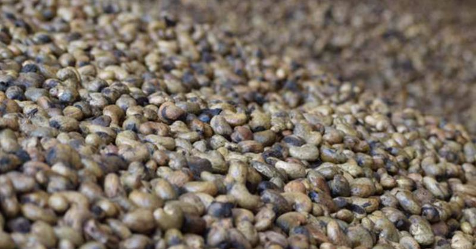
Việt Nam chi gần 1 tỷ USD nhập hạt điều trong một tháng, lập kỷ lục chưa từng có 🔗 MOI
Điều là mặt hàng nông sản xuất khẩu chủ lực của Việt Nam. Suốt hai thập kỷ qua, Việt Nam giữ ngôi đầu thế giới về sản lượng điều nhân xuất khẩu. Tuy nhiên, báo cáo mới nhất của Bộ Nông nghiệp và Môi t
Mỹ tung video bắn hai tàu treo cờ Iran cố vượt vòng phong tỏa 🔗 MOI
Mỹ bắn vào hai tàu treo cờ Iran bị tố tìm cách vượt vòng phong tỏa hôm 8-5 - Video: CENTCOM Theo thông báo trên mạng xã hội X ngày 8-5, Bộ Tư lệnh trung tâm Mỹ (CENTCOM) cho biết tiêm kích F/A-18 Supe

Phát huy vai trò chủ đạo của kinh tế nhà nước trong kỷ nguyên mới 🔗 MOI
Kinh tế Thay vì dựa trên quy mô sở hữu, bài viết phân tích vai trò của kinh tế nhà nước trong nền kinh tế Việt Nam theo cách tiếp cận chức năng: ổn định kinh tế vĩ mô, định hướng phát triển và thiết l
Tài sản người cao tuổi Nhật Bản: Nguy cơ đóng băng 2 . 000 Tỷ USD và tác động kinh tế 🔗 MOI
Nhật Bản: 2.000 tỷ USD tài sản của người cao tuổi mất trí nhớ có nguy cơ đóng băng, 1/2 GDP hiện nằm trong tay người già Vũ Anh | 09/05/2026 07:00 AM | Kinh doanh Theo dõi Cafebiz.vn trên Xu hướng đán
Xung đột tại Trung Đông: Mỹ nổ súng ngăn chặn 2 tàu chở dầu tiến vào cảng Iran 🔗 MOI
Facebook Twitter Lưu bài viết Bản in Copy link Ngày 8/5, quân đội Mỹ thông báo các lực lượng nước này đã nổ súng và vô hiệu hóa 2 tàu chở dầu treo cờ Iran đang tìm cách tiến vào một cảng Iran nằm trên
Ông Trump dùng thuế đe dọa EU 🔗 MOI
Tuần trước, ông Trump đe dọa sẽ tăng thuế đối với ô tô nhập từ EU lên 25% trong tuần này với lý do tương tự. Chưa rõ cảnh báo mới sẽ áp dụng cho toàn bộ hàng hóa EU hay chỉ cho ô tô. Nếu chỉ cho ô tô,
Trung Quốc chế tạo thành công máy tính lượng tử nguyên tử hai nhân 🔗 MOI
Facebook Twitter Lưu bài viết Bản in Copy link Trung Quốc thông báo đã nghiên cứu và phát triển thành công máy tính lượng tử nguyên tử hai nhân đầu tiên, đánh dấu bước tiến quan trọng trong quá trình
EU “bật đèn xanh” cho việc nhập khẩu nhiên liệu bay từ Mỹ 🔗 MOI
Facebook Twitter Lưu bài viết Bản in Copy link Trước những diễn biến phức tạp của cuộc xung đột tại Iran khiến eo biển Hormuz bị phong tỏa, Cơ quan An toàn Hàng không Liên minh châu Âu (EASA) đang kh
CEO Nvidia, Apple sẽ cùng ông Trump đến Trung Quốc 🔗 MOI
Ngày 8/5, Reuters trích các nguồn tin thân cận cho biết Nhà Trắng và Bộ Tài chính Mỹ cân nhắc mời đại diện của hơn 10 doanh nghiệp Mỹ đi cùng Tổng thống Donald Trump trong chuyến thăm Trung Quốc tuần

Dự thảo văn kiện Đại hội XIV của Đảng: Nhìn từ lăng kính kinh tế - tài chính 🔗 MOI
Thời sự Dự thảo Báo cáo chính trị trình Đại hội XIV của Đảng đặt mục tiêu tăng trưởng GDP giai đoạn 2026–2030 đạt từ 10%/năm trở lên với định hướng rõ ràng chuyển đổi mô hình tăng trưởng dựa vào khoa

Đổi mới mô hình tăng trưởng gắn với tái cơ cấu nền kinh tế trong giai đoạn mới 🔗 MOI
Pháp luật Triển khai Nghị quyết số 07-NQ/TW ngày 18/11/2016 của Bộ Chính trị về chủ trương, giải pháp cơ cấu lại ngân sách nhà nước, quản lý nợ công, việc cơ cấu lại ngân sách nhà nước, quản lý nợ côn

Tiếp nhận phản ánh kiến nghị của doanh nghiệp 🔗 MOI
HỌ VÀ TÊN * EMAIL * SỐ ĐIỆN THOẠI * ĐỊA CHỈ * TIÊU ĐỀ * FILES ĐÍNH KÈM NỘI DUNG * RadEditor - HTML WYSIWYG Editor. MS Word-like content editing experience thanks to a rich set of formatting tools, dro
[Video] Nhà Trắng khẳng định lệnh ngừng bắn Mỹ - Iran vẫn hiệu lực 🔗 MOI
Iran tấn công ba tàu khu trục Mỹ tại Eo biển Hormuz bằng tên lửa, UAV và xuồng cao tốc Mỹ tuyên bố đánh chặn toàn bộ đòn tấn công và không kích đáp trả các cơ sở quân sự Iran Tehran cáo buộc Washingto
Hiểm họa từ thói quen sạc và sử dụng pin sai quy cách 🔗 MOI
Vụ cháy tại cây xăng Đà Nẵng ngày 2/5 khiến hai người thiệt mạng do chở 20 khối pin và ắc-quy trong cốp ôtô cho thấy những rủi ro trong việc vận chuyển thiết bị lưu trữ điện. Video hiện trường cho thấ
Lại tập kích Iran, Mỹ có thể mở eo biển Hormuz thế nào ? 🔗 MOI
Rạng sáng qua (8.5), Đài CBS dẫn lời Tổng thống Mỹ Donald Trump tuyên bố lệnh ngừng bắn giữa Mỹ và Iran vẫn có hiệu lực. Sau đó, ông cũng cho biết thỏa thuận giữa hai nước "có thể không diễn ra" nhưng
Châu Á trong cuộc khủng hoảng giá dầu 🔗 MOI
Trong suốt hơn 2 tháng chiến tranh Mỹ, Israel với Iran, giá dầu liên tục biến động. Những ngày đầu tháng 5, giá dầu vẫn xoay quanh mức 100 USD/thùng. Mức giá này vẫn cao hơn nhiều so với mức khoảng 70

Khơi thông các động lực tăng trưởng kinh tế Việt Nam 🔗 MOI
Pháp luật Nhờ sự phối hợp đồng bộ của chính sách tài khóa và tiền tệ trong việc thúc đẩy cầu trong nước, kinh tế Việt Nam năm 2025 phục hồi mạnh, với tăng trưởng vượt mục tiêu đề ra. Về ổn định kinh t
Mỹ nã hỏa lực vào 2 tàu Iran, rộ tin Washington và Tehran tái đàm phán 🔗 MOI
Video: CENTCOM Trong thông cáo đăng tải trên mạng xã hội X hôm 8/5, Bộ Tư lệnh Trung tâm Mỹ (CENTCOM) cho biết các lực lượng Washington đã điều động chiến đấu cơ F/A-18 Super Hornet xuất kích từ tàu s
Tehran thu giữ tàu chở dầu của chính Iran trên Vịnh Oman 🔗 MOI
(Ảnh: Reuters) Tuyên bố cho biết, tàu chở dầu mang cờ Barbados có tên Ocean Koi đang chở dầu của Iran nhưng “cố gắng làm gián đoạn việc xuất khẩu dầu bằng cách lợi dụng điều kiện khu vực". Tàu chở dầu
Ngày mai: Sun Group sẽ khởi công dự án hơn 2.000 tỷ tại tỉnh có điểm cực Tây của Tổ quốc 🔗 MOI
TIN MỚI Trong khuôn khổ Hội nghị Xúc tiến Đầu tư tỉnh Điện Biên năm 2026 diễn ra từ ngày 10–11/5, UBND tỉnh sẽ tổ chức lễ khởi công 2 dự án trọng điểm. Trong đó, dự án Tổ hợp cáp treo kết hợp du lịch
Cơn sốt AI lan nhanh tại Trung Quốc 🔗 MOI
Tại một sự kiện gần đây ở thủ đô Bắc Kinh - Trung Quốc, hàng chục người tập trung bên ngoài trụ sở một công ty internet di động để chờ được hỗ trợ cài đặt tác nhân trí tuệ nhân tạo (AI) OpenClaw trên
Năng lượng & Khoáng sản 🔗 MOI
Ngày 9/4, Ủy ban Thường vụ Quốc hội đã cho ý kiến về dự thảo Nghị quyết của Quốc hội về việc ban hành một số quy định về thuế bảo vệ môi trường, thuế giá trị gia tăng, thuế tiêu thụ đặc biệt đối v
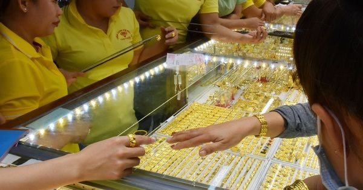
Giá vàng hôm nay 9-5: Tiếp tục sụt giảm 🔗 MOI
Giá vàng hôm nay tiếp tục suy yếu Đầu ngày 9-5 (giờ Việt Nam), giá vàng hôm nay trên thị trường quốc tế đóng cửa cuối tuần tại 4.715 USD/ounce, giảm khoảng 35 USD so với đỉnh cao đạt được trong phiên
Tăng trưởng bắt đầu từ bộ máy 🔗 MOI
Đằng sau chỉ thị này là thông điệp "TP HCM không chấp nhận đứng yên". Điều đầu tiên mà Chỉ thị 11 cho thấy là TP HCM đang cảm nhận rất rõ áp lực "không thể phát triển như cũ". Nhiều năm qua, TP HCM vẫ
Tin tức thế giới 9-5: Nga - Ukraine ngừng bắn 3 ngày; Ông Rubio kêu gọi châu Âu phụ đối phó Iran 🔗 MOI
Ngoại trưởng Marco Rubio gặp Thủ tướng Ý Giorgia Meloni tại Rome ngày 8-5, trong chuyến thăm kéo dài hai ngày tới Ý và Vatican - Ảnh: AP Ngoại trưởng Mỹ thúc đẩy châu Âu chia sẻ gánh nặng đối phó Iran

Kiến tạo không gian phát triển mới cho kinh tế tập thể 🔗 MOI
Pháp luật Trong giai đoạn 2021-2025, dựa vào mục tiêu phát triển, điều kiện ngân sách và nhu cầu hỗ trợ, năng lực của các hợp tác xã, Thủ tướng Chính phủ đã ban hành Chương trình hỗ trợ phát triển kin
Tạp chí Kinh tế Sài Gòn 🔗 MOI
Kinh tế Sài Gòn giữ bản quyền nội dung của trang web thesaigontimes.vn. Không sử dụng lại nội dung trên trang này dưới mọi hình thức, trừ khi được Kinh tế Sài Gòn đồng ý bằng văn bản. Trang ngoài sẽ đ
Tạp chí Kinh tế Sài Gòn 🔗 MOI
Kinh tế Sài Gòn giữ bản quyền nội dung của trang web thesaigontimes.vn. Không sử dụng lại nội dung trên trang này dưới mọi hình thức, trừ khi được Kinh tế Sài Gòn đồng ý bằng văn bản. Trang ngoài sẽ đ

Khu Công nghiệp, Khu Kinh tế 🔗 MOI
Trước biến động giá năng lượng thế giới, Chính phủ đã chủ động điều hành linh hoạt các chính sách thuế, phí nhằm bình ổn giá trong nước và hỗ trợ đời sống nhân dân trong 4 tháng đầu năm 2026. Nằm tron
Tạp chí Kinh tế Sài Gòn 🔗 MOI
Kinh tế Sài Gòn giữ bản quyền nội dung của trang web thesaigontimes.vn. Không sử dụng lại nội dung trên trang này dưới mọi hình thức, trừ khi được Kinh tế Sài Gòn đồng ý bằng văn bản. Trang ngoài sẽ đ
Tạp chí Kinh tế Sài Gòn 🔗 MOI
Kinh tế Sài Gòn giữ bản quyền nội dung của trang web thesaigontimes.vn. Không sử dụng lại nội dung trên trang này dưới mọi hình thức, trừ khi được Kinh tế Sài Gòn đồng ý bằng văn bản. Trang ngoài sẽ đ
Giáo sư nổi tiếng về ung thư bị cách chức viện trưởng vì sai phạm học thuật 🔗 MOI
Một trường đại học hàng đầu của Trung Quốc đã áp dụng biện pháp kỷ luật đối với nhà nghiên cứu ung thư nổi tiếng sau khi phát hiện sai phạm học thuật trong một nghiên cứu đăng trên tạp chí khoa học Na
Mỹ chờ phản hồi từ Iran, Tehran ra tuyên bố cứng rắn 🔗 MOI
Ngoại trưởng Marco Rubio hôm thứ Sáu (8/5) cho biết, Mỹ đang chờ phản hồi từ Iran về đề xuất liên quan đến chấm dứt xung đột. "Hôm nay chúng ta sẽ biết được điều gì đó. Hiện tại, chúng tôi vẫn chưa nh
Mỹ - Iran đấu súng dọc eo biển Hormuz 🔗 MOI
Truyền thông Iran hôm thứ Sáu (8/5) cho biết lực lượng Mỹ và Iran đã xảy ra một cuộc đấu súng quanh eo biển Hormuz, trong bối cảnh căng thẳng quân sự giữa hai bên tiếp tục gia tăng dù Washington khẳng
Đặt thành Điện Hải vào trung tâm 'trục di sản' Cửa Hàn 🔗 MOI
"Cái lõi vẫn phải là pháo đài Điện Hải" Tại tọa đàm khoa học "Dấu ấn xây dựng và bảo vệ đất nước của nhà Nguyễn tại Cửa Hàn - nhận diện qua các công trình phòng thủ thế kỷ 19 - gợi mở hướng tiếp cận d
[Video] Nga để ngỏ đối thoại với châu Âu về xung đột Ukraine 🔗 MOI
Điện Kremlin khẳng định Tổng thống V. Putin sẵn sàng đối thoại với EU Moskva cho rằng châu Âu phải là bên chủ động nối lại liên lạc Financial Times nói EU đang cân nhắc khả năng mở đàm phán trực tiếp
Ngành cơ khí giữ nhịp tăng trưởng 🔗 MOI
Kỹ sư kiểm tra trạm bơm thủy lực cao áp điều tiết đầu giếng cho tàu khai thác và chế biến tại Công ty Alpha ECC. ẢNH: QUANG VŨ Vươn xa nhờ “bệ đỡ” dầu khí 3 cẩu trọng lượng 150 tấn/cẩu, sức nâng khoản
Điện Kremlin nêu khả năng ông Putin đàm phán với châu Âu 🔗 MOI
(PLO)- Người phát ngôn Điện Kremlin - ông Dmitry Peskov nhấn mạnh rằng châu Âu nên là bên tiên phong bước đầu tiên hướng tới việc khôi phục đối thoại với Nga. Ngày 8-5, người phát ngôn Điện Kremlin -
Chiến sự Ukraine ngày 1.535: Nga - Ukraine tố nhau vi phạm ngừng bắn 🔗 MOI
An ninh được thắt chặt trước Điện Kremlin trước ngày Chiến thắng ảnh: reuters Nga - Ukraine tiếp tục phóng UAV tấn công nhau Tổng thống Vladimir Putin đã đơn phương tuyên bố ngừng bắn trong 2 ngày 8 –
Điểm nóng xung đột ngày 9-5: Ả Rập Saudi xoay chuyển chiến lược với Mỹ? 🔗 MOI
Theo đài RT, Hiệp ước phòng thủ chung (SMDA) được Thái tử Ả Rập Saudi Mohammed bin Salman và Thủ tướng Pakistan Shehbaz Sharif ký hồi tháng 9 năm ngoái được đánh giá là bước ngoặt lớn trong quan hệ ha

Chuyên đề Agribank 🔗 MOI
Trước áp lực thực thi Nghị định số 70/2025/NĐ-CP về hóa đơn điện tử và quản lý thuế, Agribank tổ chức hội nghị tập huấn toàn quốc, thống nhất quy trình hỗ trợ và giới thiệu gói giải pháp số dành riêng

TỔNG QUAN TỔNG QUAN KINH TẾ 🔗 MOI
Kinh tế Hoạt động điều hành chính sách tài khóa năm 2025 diễn ra trong bối cảnh tình hình kinh tế trong nước và quốc tế tiếp tục diễn biến phức tạp, căng thẳng thương mại toàn cầu gia tăng, đặc biệt l

Tiếp nhận phản ánh kiến nghị của công dân 🔗 MOI
HỌ VÀ TÊN * EMAIL * SỐ ĐIỆN THOẠI * ĐỊA CHỈ * TIÊU ĐỀ * FILES ĐÍNH KÈM NỘI DUNG * RadEditor - HTML WYSIWYG Editor. MS Word-like content editing experience thanks to a rich set of formatting tools, dro
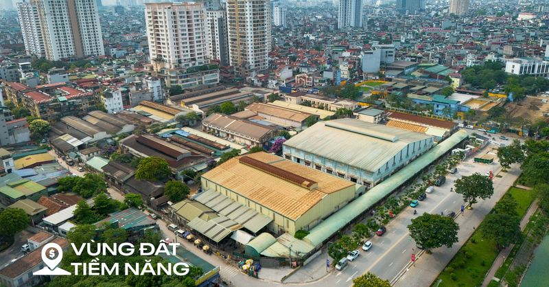
Toàn cảnh khu đất ven hồ sắp chuyển đổi từ nhà máy sang chung cư tại Hà Nội 🔗 MOI
TIN MỚI Khu đất số 164 Nguyễn Đức Cảnh (phường Tương Mai, Hà Nội) là một trong những quỹ đất công nghiệp hiếm hoi còn sót lại trong đường Vành đai 2,5. Với hơn 2,9 ha, nơi đây là trụ sở và nhà xưởng c
Tranh chấp thừa kế đất đai: Kiện ở tòa nào mới đúng? 🔗 MOI
(PLO)- TAND Tối cao vừa có văn bản hướng dẫn cách xác định tòa án có thẩm quyền giải quyết tranh chấp thừa kế tài sản là bất động sản... TAND Tối cao vừa ban hành Công văn 250, thông báo kết quả giải
Chưa đầy 1 ngày nữa, Vinhomes của tỷ phú Phạm Nhật Vượng sẽ khởi công siêu dự án 23.600 tỷ đồng 🔗 MOI
VHM: Giá hiện tại Thay đổi Xem hồ sơ doanh nghiệp TIN MỚI Theo thông tin từ Báo Điện Biên Phủ, dự án khu đô thị mới, du lịch nghỉ dưỡng và dịch vụ thể thao phía Tây Bắc tại phường Điện Biên Phủ và xã
Chứng khoán lập đỉnh mới, CTCK gọi tên 5 nhóm cổ phiếu có cơ hội "hút tiền" trong tháng này 🔗 MOI
TIN MỚI Trong báo cáo mới công bố, C hứng khoán SHS cho biết VN-Index trong tháng 4/2026 tiếp tục vận động khá sát kịch bản cơ sở đã được đưa ra trong báo cáo chiến lược năm 2026. Dưới tác động dẫn dắ

Chính phủ với doanh nghiệp 🔗 MOI
20/03/2026 (Chinhphu.vn) - Chính phủ ban hành Nghị quyết số 11/2026/NQ-CP về chi phí tiền lương Ngân hàng thương mại TNHH một thành viên Xây dựng Việt Nam, Ngân... 04/03/2026 (Chinhphu.vn) - Chính phủ
Siết chặt vi phạm bản quyền, không để hồn nhiên xem phim lậu 🔗 MOI
Vi phạm bản quyền trên môi trường số đang trở thành bài toán nan giải không chỉ với Việt Nam mà còn với nhiều quốc gia trên thế giới. Từ phim ảnh, âm nhạc, chương trình truyền hình đến phần mềm máy tí

Ngân hàng đồng loạt thanh lý xe chở tiền, giá chỉ từ 30 triệu đồng 🔗 MOI
VietinBank Chi nhánh Quảng Ninh vừa thông báo lựa chọn tổ chức đấu giá 2 xe chuyên dụng chở tiền hiệu Mitsubishi Pajero mang biển số 14M-3224 và 14C-3224. Giá khởi điểm theo thông báo của ngân hàng là
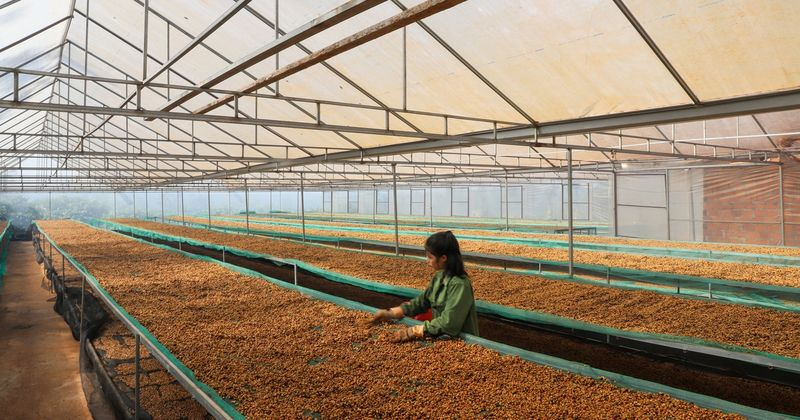
Thúc đẩy tăng trưởng xuất khẩu nông lâm sản như thế nào? 🔗 MOI
Hàng loạt ngành hàng có nguy cơ suy giảm Tại hội nghị, nhiều hiệp hội ngành hàng chủ lực của cả nước như thủy sản , rau quả, hồ tiêu… đều cho thấy tình hình tăng trưởng lạc quan ngay từ đầu năm. Trong

Trẻ sinh ra di truyền giang mai từ mẹ có điều trị được không? 🔗 MOI
🔗 MOI
Có nhà đẹp, xe sang và tài khoản nhiều người mơ ước, nhưng doanh nhân người Mỹ Mike Black lại quyết định làm một việc như thể kịch bản phim, khi tự biến mình thành người vô gia cư cùng quyết tâm kiếm

Kiểm soát lạm phát trước những "biến số" cuối năm 🔗 MOI
Tài chính Tại Nghị quyết số 86/NQ-CP ngày 4/11/2025 về triển khai nhiệm vụ trọng tâm những tháng cuối năm 2025, Chính phủ tiếp tục yêu cầu về kiểm soát lạm phát, giữ vững ổn định kinh tế vĩ mô. Trong
'Dưới bóng điện hạ' trượt giải, Hyun Bin là diễn viên nam xuất sắc Baeksang 2026 🔗 MOI
Hyun Bin, Park Bo Young là nam nữ diễn viên xuất sắc năm nay - Ảnh: Iplus Tối 8-5 (giờ Hàn Quốc), Lễ trao giải nghệ thuật Baeksang lần thứ 62 chính thức diễn ra, quy tụ dàn sao Hàn đình đám gồm Hyun B
Lịch trực tiếp U17 châu Á 2026: Thái Lan đấu Saudi Arabia 🔗 MOI
Lịch trực tiếp U17 châu Á 2026: Thái Lan đấu Saudi Arabia - Đồ họa: AN BÌNH Lượt trận thứ 2 vòng bảng Giải vô địch U17 châu Á 2026 bắt đầu với hai cặp đấu ở bảng B: U17 Trung Quốc - U17 Nhật Bản (23h
Xác định 4 cặp tứ kết Giải U17 nữ châu Á 2026 🔗 MOI
U17 nữ Việt Nam góp mặt ở tứ kết Giải U17 nữ châu Á 2026 - Ảnh: AFC 8 đội bóng xuất sắc vượt qua vòng đấu bảng Giải U17 nữ châu Á 2026 là Trung Quốc (chủ nhà), Việt Nam, Thái Lan, Nhật Bản, Úc, Ấn Độ,
Nhiều trường học Đà Nẵng tìm đủ cách kéo học trò rời mạng xã hội 🔗 MOI
Học sinh Trường THPT Trần Phú hoàn toàn “cai” điện thoại trong giờ học từ nhiều năm qua - Ảnh: B.D. Theo đánh giá, có những nền tảng mạng xã hội tiện dụng lại kém thu hút trong khi không ít nền tảng đ
Cổ phiếu ngân hàng phối hợp cùng ‘họ Vingroup’ kéo VN-Index lên đỉnh mới 🔗 MOI
VN-Index cán mốc 1.915,37 điểm sau khi kết phiên 8-5 - Ảnh: HỮU HẠNH VN-Index xác lập đỉnh mới Kết phiên 8-5, VN-Index tăng 6,36 điểm, tương ứng tăng 0,33%, xác lập kỷ lục mới tại 1.915,37 điểm. VN30-
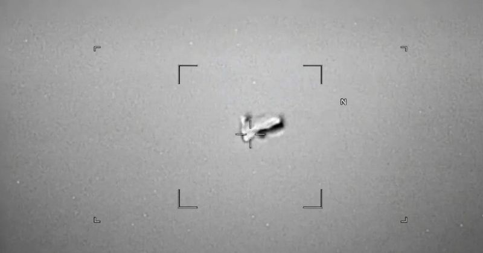
Mỹ tung 162 hồ sơ vật thể lạ trên không để người dân tự xem, khuyến khích tư nhân phân tích 🔗 MOI
Bức ảnh được mô tả là "báo cáo về hiện tượng UAP" của Bộ Tư lệnh Ấn Độ Dương - Thái Bình Dương Mỹ vào năm 2024, cho thấy một UAP có hình dạng giống quả bóng bầu dục gần Nhật Bản - Ảnh: LẦU NĂM GÓC Ngà

Huy động tài chính xanh hướng tới mục tiêu phát triển bền vững 🔗 MOI
Pháp luật Chuyển đổi năng lượng xanh đã trở thành xu thế toàn cầu mang tính bắt buộc, gắn liền với mục tiêu Net Zero và yêu cầu cạnh tranh trong chuỗi cung ứng quốc tế. Trong bối cảnh đó, doanh nghiệp
Tạp chí Kinh tế Tài chính kỳ 3 tháng 3/2026 🔗 MOI
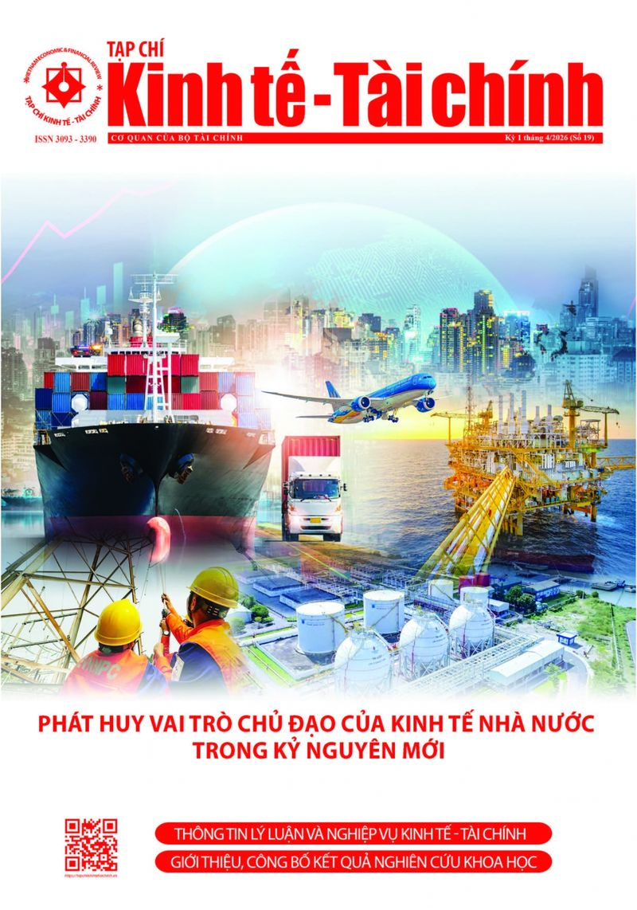
Tạp chí Kinh tế Tài chính kỳ 1 tháng 4/2026 🔗 MOI

Tạp chí Kinh tế Tài chính kỳ 2 tháng 4/2026 🔗 MOI

Góc chuyên gia & nhà quản lý 🔗 MOI
Trước biến động giá năng lượng thế giới, Chính phủ đã chủ động điều hành linh hoạt các chính sách thuế, phí nhằm bình ổn giá trong nước và hỗ trợ đời sống nhân dân trong 4 tháng đầu năm 2026. Nằm tron

Bảo vệ nhà đầu tư trước “cơn sốt” tài sản mã hóa 🔗 MOI
Chứng khoán Trong bối cảnh Việt Nam đang từng bước xây dựng khung pháp lý và chuẩn bị thí điểm thị trường tài sản mã hóa theo Nghị quyết số 05/2025/NQ-CP của Chính phủ, bài toán về an toàn hệ thống, m

Hoạt động của Lãnh đạo Bộ Tài chính 🔗 MOI
Trước biến động giá năng lượng thế giới, Chính phủ đã chủ động điều hành linh hoạt các chính sách thuế, phí nhằm bình ổn giá trong nước và hỗ trợ đời sống nhân dân trong 4 tháng đầu năm 2026. Nằm tron

Nước CHXHCN Việt Nam 🔗 MOI
© Cổng Thông tin điện tử Chính phủ Tổng Giám đốc: Nguyễn Hồng Sâm Trụ sở: 16 Lê Hồng Phong - Ba Đình - Hà Nội. Điện thoại: Văn phòng: 080 43162; Fax: 080.48924 Email: thongtinchinhphu@chinhphu.vn Bản
Điền kinh Việt Nam chạy đà cho Asiad 20 🔗 MOI
VĐV Lê Thị Tuyết Mai trao gậy cho Nguyễn Thị Ngọc ở đợt chạy cuối chung kết tiếp sức 4x400m nữ SEA Games 33-2025. ẢNH: DŨNG PHƯƠNG Ban huấn luyện đội tuyển điền kinh Việt Nam cho biết, hiện toàn đội đ
Thầy giáo tương lai thi tốt nghiệp THPT lần thứ 7 tiết lộ 'bí kíp' tránh mất điểm oan môn Toán 🔗 MOI
Ở độ tuổi 25, trong khi bạn bè cùng trang lứa đã tốt nghiệp và đi làm, Đặng Minh Hiếu vẫn là sinh viên ĐH. Lí do, trước đó, anh có 3 năm liên tục thi lại để “nhảy” ngành. Năm 2026, Hiếu là một trong 6
EU, Brazil và Trung Quốc lập liên minh thị trường carbon 🔗 MOI
Facebook Twitter Lưu bài viết Bản in Copy link Liên minh châu Âu (EU), Brazil và Trung Quốc vừa chính thức ra mắt Liên minh mở về thị trường carbon bắt buộc trong buổi lễ ký kết diễn ra tại Florence c
Nóng hôm nay 9-5: Ga Đà Lạt sắp được hồi sinh; Thứ trưởng Bộ Y tế Nguyễn Tri Thức thăm bé trai 2 tuổi bị bạo hành 🔗 MOI
(PLO)- TP.HCM sắp khởi công cầu hầm vượt biển Cần Giờ - Vũng Tàu và loạt 'siêu dự án'; 88 tỉ đồng hồi sinh Ga Đà Lạt, đường ray răng cưa huyền thoại; Thứ trưởng Bộ Y tế Nguyễn Tri Thức thăm bé trai 2
Lo nhà đầu tư dự án BT bị thiệt do giá đất tăng, HoREA có đề xuất mới 🔗 MOI
TIN MỚI Hiệp hội Bất động sản TP HCM (HoREA) đánh giá, Nghị định số 257/2025/NĐ-CP ngày 08/10/2025 của Chính phủ, quy định chi tiết về việc thực hiện dự án áp dụng loại hợp đồng xây dựng - chuyển giao
TP.HCM tìm cơ chế đột phá từ luật Đô thị đặc biệt 🔗 MOI
Phát biểu khai mạc, Phó chủ tịch HĐND TP.HCM Nguyễn Trường Nhật Phượng cho rằng TP cần một nền tảng thể chế mới tương xứng với vai trò đầu tàu kinh tế của cả nước. Theo bà Phượng, các cơ chế đặc thù t
Lầu Năm Góc công bố loạt tài liệu về UFO 🔗 MOI
Lầu Năm Góc hôm thứ Sáu (8/5) đã công bố một loạt tài liệu chưa từng được tiết lộ liên quan đến vật thể bay không xác định (UFO), đánh dấu bước đi mới trong chiến dịch tăng cường minh bạch về các hiện
Chiến sự Trung Đông ngày 71: CIA tính toán Iran có thể cầm cự lệnh phong tỏa của Mỹ trong 4 tháng; Mỹ tăng sức ép với châu Âu về Iran 🔗 MOI
Tình hình Trung Đông tiếp tục căng thẳng khi Mỹ và Iran nối lại các cuộc tấn công qua lại tại eo biển Hormuz. Mỹ tiếp tục gây sức ép với châu Âu về Iran Ngày 8-5, Ngoại trưởng Mỹ Marco Rubio thúc giục
Hà Nội đưa hai trường chuyên lên chuẩn quốc tế 🔗 MOI
Tối 7/5, UBND thành phố Hà Nội phê duyệt đề án nói trên. Hai trường này sẽ dành cho học sinh có năng lực nổi trội. Các em được học chuyên sâu, tham gia dự án, nghiên cứu và rèn kỹ năng đại học.
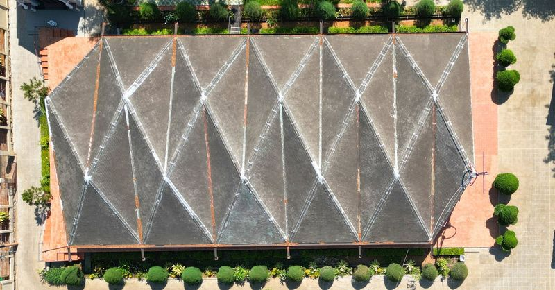
Nhà thờ 32 mái 'độc nhất vô nhị' ở Đồng Nai khiến nhiều người tò mò 🔗 MOI
Nép mình giữa không gian xanh mát ở phường Bình Lộc (TP Đồng Nai), nhà thờ Suối Tre gây ấn tượng với lối kiến trúc lạ mắt, độc đáo. Từ trên cao, mái nhà thờ xếp lớp thành 32 hình tam giác nối tiếp, đa
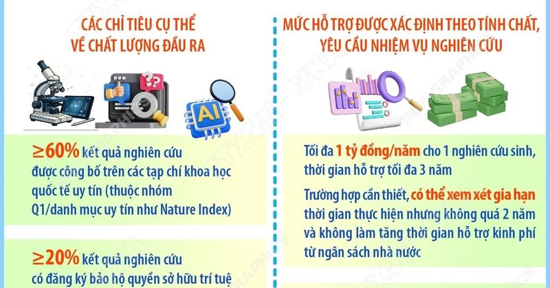
Hỗ trợ tới 1 tỷ đồng mỗi năm cho nghiên cứu sinh xuất sắc 🔗 MOI
Facebook Twitter Lưu bài viết Bản in Copy link Bộ Khoa học và Công nghệ vừa ban hành Quyết định 2103/QĐ-BKHCN 13/4/2026 phê duyệt "Chương trình hỗ trợ nghiên cứu sinh xuất sắc giai đoạn 2026-2030" (Ch
Xe MPV cỡ nhỏ đồng loạt giảm giá sâu, có mẫu ưu đãi hơn 100 triệu để hút khách 🔗 MOI
MPV phổ thông bước vào cuộc đua ưu đãi chưa từng có Sau giai đoạn liên tục tăng trưởng nhờ nhu cầu xe gia đình và kinh doanh dịch vụ, phân khúc xe MPV cỡ nhỏ tại Việt Nam đang chứng kiến một đợt cạnh
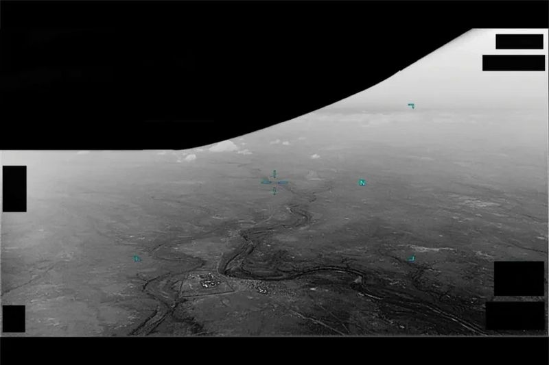
Lầu Năm Góc giải mật tài liệu về UFO 🔗 MOI
(PLO)- Lầu Năm Góc đã công bố các tài liệu chưa từng được tiết lộ trước đây về UFO, bao gồm báo cáo từ các phi hành gia trên tàu Apollo 12 và Apollo 17. Ngày 8-5, Lầu Năm Góc công bố “các tài liệu chư
Mô hình chính quyền hai cấp tạo chuyển biến mới ở Thái Nguyên 🔗 MOI
Facebook Twitter Lưu bài viết Bản in Copy link Sau một năm triển khai mô hình chính quyền địa phương hai cấp, tỉnh Thái Nguyên đang từng bước tạo ra những chuyển biến rõ nét trong tổ chức bộ máy, cải
Vụ cướp ngân hàng ở Đức: Cảnh sát giải cứu thành công con tin 🔗 MOI
Facebook Twitter Lưu bài viết Bản in Copy link Ngày 8/5, cảnh sát Đức đã giải cứu thành công 2 con tin trong vụ cướp ngân hàng ở thị trấn Sinzig, miền Tây nước này. Tuy nhiên, các nghi phạm thực hiện
Nghệ sĩ Tuấn Kiệt 'Đảo hoa hậu' tiết lộ về Trấn Thành và cú đổi vai triệu view 🔗 MOI
Đổi vai giữa chừng và cú bẻ lái không ai ngờ - Là người ban đầu vào vai Nam vương nam tính nhất thế giới rồi bất ngờ thay Long Chun làm MC Miss 2T, anh cảm nhận vai trò của mình đã góp phần nào vào sứ
Mức trích lập quỹ đào tạo nhân lực doanh nghiệp nhà nước dự kiến không quá 1% lợi nhuận 🔗 MOI
Bộ Tài chính đang dự thảo Nghị định quy định chính sách của Nhà nước đối với doanh nghiệp và Quỹ đào tạo nhân lực của doanh nghiệp. Theo dự thảo, Quỹ đào tạo nhân lực của doanh nghiệp do doanh nghiệp
Hình ảnh FPV cảm tử Nga tập kích loạt pháo của quân Ukraine ở Sumy 🔗 MOI
Video: Bộ Quốc phòng Nga/TASS Hãng thông tấn TASS dẫn báo cáo đăng kèm video của Bộ Quốc phòng Nga viết: “Các lực lượng trinh sát đã phát hiện vị trí pháo binh Ukraine ở vùng tiền tuyến thuộc tỉnh Sum
Bé 8 tháng tuổi nuốt phải bông tai sắc nhọn 🔗 MOI
Chiều 8/5, thông tin từ Bệnh viện Đa khoa Bạc Liêu (tỉnh Cà Mau ), các bác sĩ vừa cấp cứu thành công một trường hợp bé gái 8 tháng tuổi nuốt dị vật sắc nhọn. Ê-kíp các bác sĩ tiến hành nội soi gắp dị
Anh hùng nào lấy vai làm giá súng cho đồng đội bắn quân địch? 🔗 MOI
1. Chiến sĩ nào lấy thân mình làm giá súng cho đồng đội tiêu diệt quân địch? Đồng chí Bế Văn Đàn 0% Đồng chí Phan Đình Giót 0% Đồng chí Nguyễn Văn Trỗi 0% Chính xác Theo trang thông tin của Bảo tàng L
Nỗ lực thiết lập cơ chế quản lý eo biển Hormuz của Iran 🔗 MOI
Đài truyền hình Press TV của Iran ngày 5/5 cho biết nước này đã thiết lập cơ chế mới để quản lý tàu thuyền đi qua eo biển Hormuz. Các phương tiện muốn qua Hormuz sẽ nhận một thư điện tử, trong đó có b
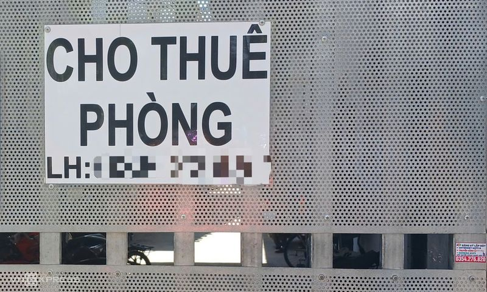
Nhiều chủ trọ lo lỗ nếu thu tiền điện đúng giá quy định 🔗 MOI
Từ ngày 25/5, chủ nhà trọ thu tiền điện của người thuê cao hơn mức quy định khi mua điện theo giá bán lẻ sinh hoạt sẽ bị phạt 20-30 triệu đồng theo Nghị định 133. Mức phạt này cao gấp ba lần mức hiện
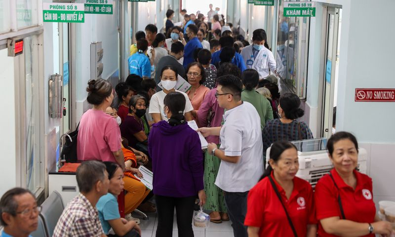
Bài toán khó khi TP HCM số hóa hồ sơ sức khỏe hàng triệu dân 🔗 MOI
Điện thoại của anh Minh, 48 tuổi, cài vài ứng dụng khám bệnh khác nhau. Cứ mỗi lần đưa bố mẹ đi khám ở một bệnh viện, anh phải cài thêm một app của bệnh viện đó để đặt lịch khám và tái khám, lấy số, x
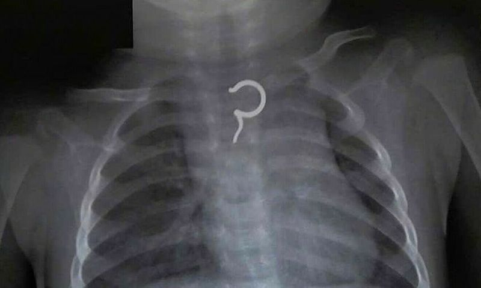
Gắp khuyên tai mắc ở thực quản bé gái 8 tháng tuổi 🔗 MOI
Ngày 8/5, đại diện Bệnh viện Đa khoa Bạc Liêu cho biết Khoa Cấp cứu tiếp nhận bệnh nhi vào chiều 7/5. Bác sĩ xác định dị vật là một khuyên tai kim loại có đầu nhọn, nằm ở thực quản bé. Hình X-quang ph

Huy động nguồn lực cho tăng trưởng xanh 🔗 MOI
Pháp luật Bài viết phân tích tiềm năng, thực trạng và định hướng phát triển các mô hình du lịch biển tại Việt Nam nhằm hướng tới một nền kinh tế biển xanh, bền vững. Với đường bờ biển dài hơn 3.260 km
'MWG sẽ là cổ phiếu vừa nhận cổ tức vừa tăng trưởng' 🔗 MOI
Theo CEO Vũ Đăng Linh, khi Điện Máy Xanh và Bách Hoá Xanh IPO, nhà đầu tư sẽ có 3 lựa chọn tuỳ theo khẩu vị đầu tư đối với nhóm cổ phiếu trong hệ sinh thái MWG. Ông Vũ Đăng Linh - Tổng giám đốc MWG. C
Tự chủ an ninh năng lượng quốc gia 🔗 MOI
Kinh tế Trong bối cảnh những cú sốc năng lượng toàn cầu ngày càng lan rộng và khó dự báo, bảo đảm an ninh năng lượng đã trở thành vấn đề sống còn đối với mỗi quốc gia. Với Việt Nam, Nghị quyết số 70-N

Tham vấn chính sách 🔗 MOI
08/05/2026 (Chinhphu.vn) - Quỹ đào tạo nhân lực của doanh nghiệp do doanh nghiệp lựa chọn, tự chủ, tự quyết định thành lập nhằm bảo đảm các hoạt động giáo dục,... 08/05/2026 (Chinhphu.vn) - Bộ Tài chí
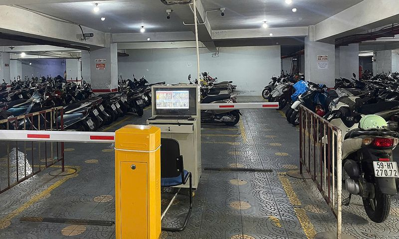
'Cuộc chiến' giành hầm giữ xe ở Chung cư Khánh Hội 🔗 MOI
Tranh chấp quyền sở hữu hơn 2.650 m2 sàn giữ xe tại tầng hầm Chung cư Khánh Hội 1, số 360C Bến Vân Đồn, kéo dài nhiều năm qua giữa chủ đầu tư là Công ty Cổ phần Đầu tư và Dịch vụ Khánh Hội với Công ty
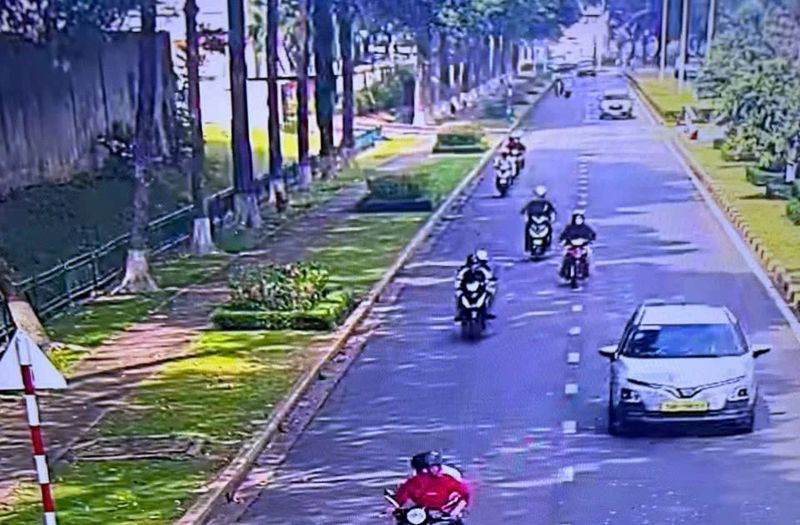
Xử lý nghiêm nam thanh niên lạng lách, đánh võng từ phản ánh trên mạng xã hội 🔗 MOI
Facebook Twitter Lưu bài viết Bản in Copy link Ngày 3/5/2026, trên mạng xã hội xuất hiện đoạn video ghi lại cảnh một nam thanh niên điều khiển xe mô tô chở theo người khác liên tục lạng lách, đánh võn
Liên đoàn Quần vợt Việt Nam kiện toàn bộ máy: BLV Vũ Quang Huy làm 'phó tướng' 🔗 MOI
BLV Vũ Quang Huy góp sức cho quần vợt Việt Nam Hội nghị Liên đoàn Quần vợt Việt Nam 2026 vừa diễn ra tại TP.HCM nhằm kiện toàn bộ máy lãnh đạo, ra mắt đại sứ, ký kết các đối tác chiến lược... Đáng chú
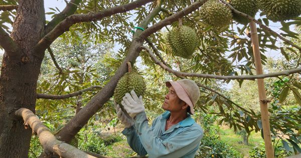
Lời giải nào cho "trái cây vua"? 🔗 MOI
Ngành sầu riêng đang đối mặt nhiều khó khăn cùng lúc. Ngoài áp lực kiểm soát cadimi, số lượng phòng kiểm nghiệm được phía Trung Quốc công nhận còn hạn chế, trong khi sản lượng sầu riêng miền Tây bước
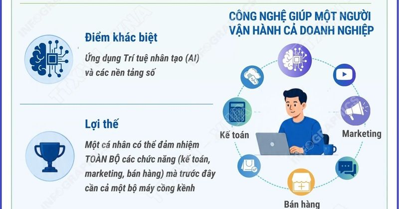
Tìm hiểu về mô hình 'Doanh nghiệp một người' 🔗 MOI
Facebook Twitter Lưu bài viết Bản in Copy link Nghị quyết số 86/NQ-CP ngày 5/4/2026 của Chính phủ ban hành Chiến lược quốc gia về khởi nghiệp sáng tạo đã lần đầu tiên đặt vấn đề thí điểm mô hình "doan
Hệ lụy “đếm” bài báo khoa học, Bài 2: Nuôi dưỡng văn hóa liêm chính khoa học 🔗 MOI
Áp lực từ công bố nhanh và nhiều TS. Lê Bá Vinh là thành viên ban biên tập của hơn 10 tạp chí quốc tế uy tín thuộc 5 nhà xuất bản lớn gồm: Elsevier, Springer Nature, Wiley, Sage và nhiều đơn vị học th
Hải trình Trường Sa, Kỳ 2: Ghé nơi bình yên 🔗 MOI
Gặp “Mai An Tiêm” trên đảo Mặt trời vừa rạng cũng là lúc tàu 561 của đoàn công tác cập bến đảo Đá Tây A. Chùa Đá Tây A nhìn ra biển với những cây sứ nở hoa màu tím hồng như một chốn tiên cảnh nào đó g
Myanmar: Phát hiện viên ruby khổng lồ tại 'thánh địa đá quý' Mogok 🔗 MOI
Facebook Twitter Lưu bài viết Bản in Copy link Myanmar vừa công bố phát hiện một viên ruby khổng lồ nặng tới 11.000 carat tại khu vực Mogok - vùng mỏ đá quý nổi tiếng bậc nhất thế giới, nơi từ lâu đượ
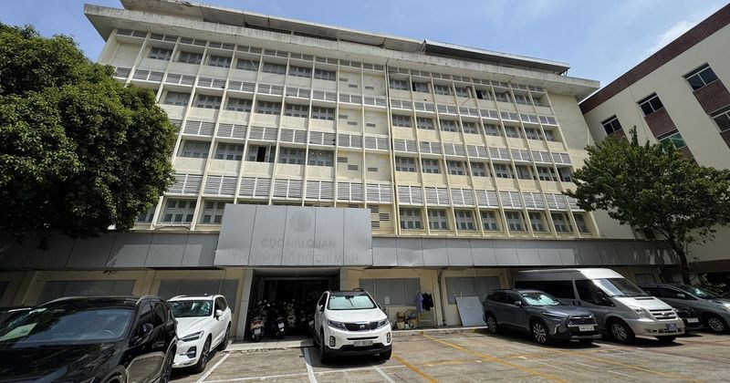
Tin tức đặc biệt trên báo in Thanh Niên 9.5.2026 🔗 MOI
Hàng ngàn cơ sở nhà đất công bỏ trống Nhiều tòa nhà do Bộ Tài chính quản lý vẫn chưa có hướng xử lý ẢNH: ĐÌNH SƠN Theo thống kê, trên địa bàn TP.HCM hiện có khoảng hơn 2.000 mặt bằng, với hàng trăm hé
Hộ kinh doanh vẫn thấp thỏm lo bị truy thu 🔗 MOI
Đóng thuế theo kê khai tăng nhiều lần so thuế khoán "Tôi thuộc hộ kinh doanh nhóm 3, theo quy định phải khấu trừ toàn bộ chi phí và đóng 17% thuế thu nhập trên doanh thu thực tế, cộng thêm 3% thuế giá
Dự án du lịch ‘ôm’ đất ven biển 15 năm, người dân Hà Tĩnh thiếu lối ra biển 🔗 MOI
Nhiều năm nay, người dân tại các thôn Cao Thắng, Xuân Thắng... (xã Kỳ Xuân, Hà Tĩnh) chủ yếu sinh sống bằng nghề biển. Tuy nhiên, việc mưu sinh của người dân gặp nhiều trở ngại khi dự án ven biển chậm
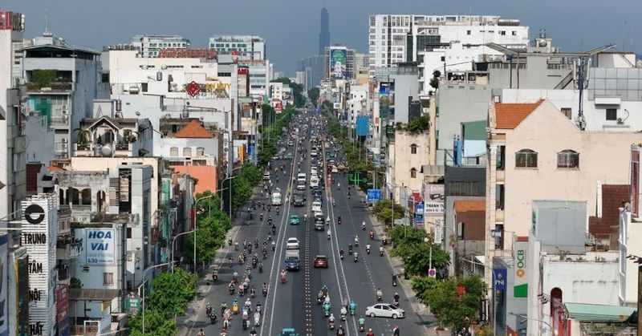
Cận cảnh đường Cộng Hòa 'lột xác', sẵn sàng tổ chức giao thông đảo chiều 🔗 MOI
Những ngày này, diện mạo đường Cộng Hòa (TPHCM) đã hoàn toàn thay đổi nhờ việc tháo dỡ dải phân cách vốn chiếm diện tích khá lớn. Mặt đường đã được xử lý phẳng phiu, hoàn tất sơn kẻ vạch, sẵn sàng cho
Liên tục mua gom, gia đình bà chủ hệ thống giáo dục quốc tế nắm trong tay số cổ phiếu ACB trị giá hơn 7.045 tỷ đồng 🔗 MOI
ACB: Giá hiện tại Thay đổi Xem hồ sơ doanh nghiệp TIN MỚI Theo báo cáo gửi Ủy ban Chứng khoán Nhà nước và Sở Giao dịch Chứng khoán, bà Nguyễn Thiên Hương Jenny đã thực hiện giao dịch mua thêm cổ phiếu
Lưới phòng thủ giúp tàu chiến Mỹ đối mặt 'mưa hỏa lực' của Iran 🔗 MOI
Bộ tư lệnh Trung tâm (CENTCOM), cơ quan đặc trách hoạt động của quân đội Mỹ ở Trung Đông, cho biết Iran tối 7/5 triển khai nhiều tên lửa, máy bay không người lái tự sát và xuồng cao tốc nhằm vào tàu k
Mỹ Tâm cháy hết mình với cuộc hẹn rất lâu mới có ở Hải Phòng 🔗 MOI
Tối 8/5, tại Quảng trường Trung Tâm Bắc Sông Cấm, TP Hải Phòng đã khai mạc Lễ hội Hoa Phượng Đỏ 2026. Đây là sự kiện văn hóa - du lịch quy mô nhất trong năm được tổ chức nhân kỷ niệm Ngày giải phóng H
Mỹ chờ Iran sớm phản hồi đề xuất hòa bình 🔗 MOI
"Trong hôm nay chúng tôi nên nhận được điều gì đó. Hiện chúng tôi chưa nhận được thông tin nào", Ngoại trưởng Mỹ Marco Rubio nói ngày 8/5, đề cập tới việc đang đợi Iran phản hồi về đề xuất hòa bình. Ô
Nỗi lo sinh kế của xe ôm trong vành đai 1 🔗 MOI
Dấu hiệu nhận biết ông lão ngoài 70 tuổi chạy xe ôm là đôi mũ một vàng, một xanh của hai hãng xe công nghệ được treo trên móc. "Xe không cháu?", ông Tiến chào mời khi thấy khách du lịch đi ngang. Nhưn

Xoắn dây tinh và thời gian vàng cấp cứu 🔗 MOI

Bộ Tài chính đồng hành cùng doanh nghiệp nhỏ và vừa trên hành trình chuyển đổi kép 🔗 MOI
Chuyển đổi số Trong bối cảnh tiêu chuẩn ESG, yêu cầu Net Zero và sức ép cạnh tranh toàn cầu ngày càng gia tăng, phần lớn doanh nghiệp Việt Nam, đặc biệt là doanh nghiệp nhỏ và vừa đang đối mặt với kho
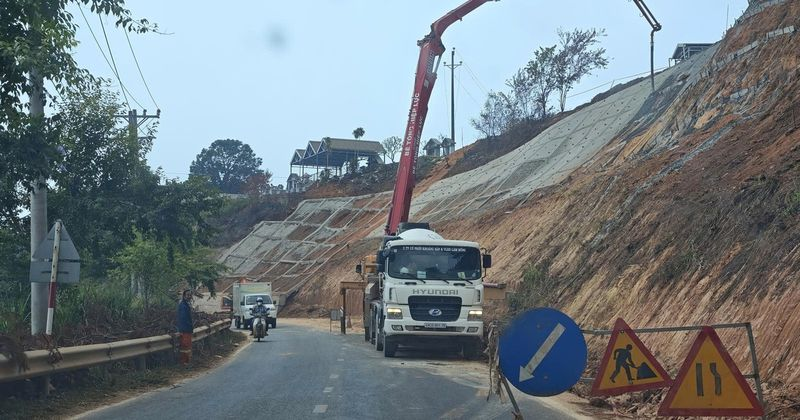
Đồng loạt khắc phục sạt lở đèo D'Ran và quốc lộ 20 trước mùa mưa 🔗 MOI
Khẩn trương khắc phục sạt lở khu vực cầu treo đèo D'ran Ngày 8.5, ghi nhận của PV Thanh Niên tại khu vực cầu Treo trên đèo D'Ran và dọc quốc lộ 20, đoạn qua phường Xuân Trường - Đà Lạt (Lâm Đồng), các
7 thực phẩm giàu sắt bổ máu, tốt cho não 🔗 MOI
Sắt là khoáng chất thiết yếu, đóng vai trò quan trọng trong việc tạo hemoglobin - thành phần của hồng cầu giúp vận chuyển oxy đi khắp cơ thể. Nhờ đó, sắt hỗ trợ duy trì năng lượng, giảm mệt mỏi và tăn
2 cựu giám đốc lãnh án vì để doanh nghiệp ứng tiền gây thất thoát 🔗 MOI
(PLO)- Cựu giám đốc ban quản lý dự án huyện Nam Giang, tỉnh Quảng Nam cũ bị phạt tù vì để doanh nghiệp ứng tiền gây thất thoát gần 10 tỉ đồng. Ngày 8-5, TAND TP Đà Nẵng tuyên phạt Thái Minh Hoàng, cựu
Luật Đô thị đặc biệt cho TPHCM: Kiến tạo khung thể chế ổn định để phát triển dài hạn 🔗 MOI
Theo dõi hệ thống tại Trung tâm Quản lý điều hành Giao thông đô thị TPHCM, phường An Khánh, TPHCM. ẢNH: HOÀNG HÙNG Phân quyền và trao quyền thực chất Phát biểu tại hội thảo, Phó Chủ tịch HĐND TPHCM Ng
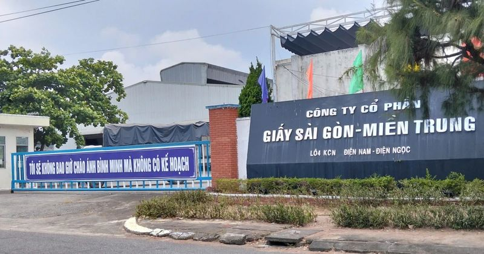
Đà Nẵng yêu cầu khẩn trương xử lý ô nhiễm môi trường tại nhà máy giấy 🔗 MOI
Phó Chủ tịch UBND TP. Đà Nẵng Trần Nam Hưng đã ký Công văn số 3539/UBND-ĐTĐT giao Sở Nông nghiệp và Môi trường chủ trì, phối hợp với Ban Quản lý Khu công nghệ cao và các khu công nghiệp Đà Nẵng cùng c
Chạy xe một bánh trên đường: Hệ quả khó lường 🔗 MOI
(PLO)- Theo quy định, xe một bánh tự cân bằng không thuộc nhóm phương tiện giao thông đường bộ; chỉ sử dụng trong không gian công viên, khu vui chơi giải trí hoặc những nơi đã được cho phép. Tại TP.HC
Công an xã hạ bậc thi đua đại úy vì đi xe máy không gương chiếu hậu khi làm nhiệm vụ 🔗 MOI
Facebook Twitter Lưu bài viết Bản in Copy link Một đại úy công an xã tại Tây Ninh đã bị hạ bậc thi đua tháng, sau khi người dân phản ánh việc ông điều khiển xe máy không có gương chiếu hậu trong quá t
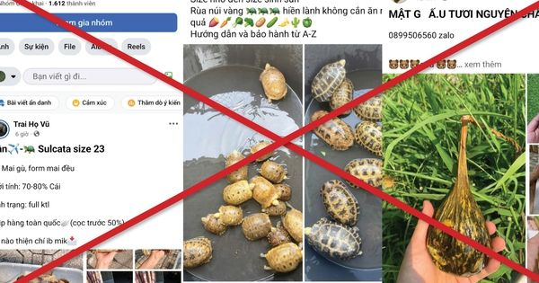
Tràn lan "chợ đen" thú rừng trên mạng 🔗 MOI
Dù các nền tảng mạng xã hội đã công bố chính sách bảo vệ động vật, nhất là động vật hoang dã (ĐVHD), nhưng việc lách luật vẫn diễn ra công khai, phổ biến. Người bán thường sử dụng các từ khóa biến tấu
Cuộc chiến đòi bồi thường vì chính sách cấm đuổi người thuê nhà thời Covid-19 🔗 MOI
Vài tháng sau khi Covid-19 bùng phát tại Mỹ năm 2020, Matthew Haines, cũng như nhiều chủ nhà khác tại Mỹ, được thông báo rằng ông không thể trục xuất những người thuê không chịu trả tiền nhà. Lệnh cấm
Thùy Anh suy sụp vì bị chê ác, chảnh, đóng phim nào cũng dở 🔗 MOI
Thùy Anh đang được khán giả đón nhận với vai Hoàn Mỹ trong Vì mẹ anh phán chia tay. Cô là diễn viên thứ chính, đóng cặp cùng trai đẹp Trần Ngọc Vàng. Bị mẹ ép buộc cưới người thừa kế tập đoàn nổi tiến
5 Anh Tài mới của ATVNCG 2026: Người vượt giới hạn, người lần đầu thử sức với âm nhạc 🔗 MOI
Trong danh sách vừa được công bố, Huỳnh Lập là cái tên thu hút nhiều sự chú ý của khán giả. Sau nhiều năm ghi dấu với vai trò đạo diễn, diễn viên và nhà sáng tạo nội dung, đây được xem là lần hiếm hoi
Đồng Nai xây cầu 6 làn xe nối TP HCM 🔗 MOI
Ngày 8/5, UBND TP Đồng Nai yêu cầu Ban Quản lý dự án đầu tư xây dựng thành phố sớm hoàn tất thủ tục để khởi công dự án. Đoạn sông Đồng Nai đi qua xã Thường Tân (TP HCM) và phường Tân Triều (Đồng Nai).
Bí ẩn vụ trộm chôn siêu xe Ferrari dưới sân hơn 3 năm 🔗 MOI
Tháng 10/1974, Rosendo Cruz, thợ sửa ống nước ở Alhambra, California mua chiếc Ferrari Dino 246 GTS mới toanh làm quà tặng vợ. Anh ta mua chiếc xe màu xanh lá cây ánh kim với giá 22.500 USD (hơn 150.0

Hiểu đúng thí điểm vùng phát thải thấp từ 1-7: Không cấm hết xe máy xăng như lời đồn 🔗 MOI
Chi tiết khu vực dự kiến thí điểm vùng phát thải thấp tại Hà Nội từ ngày 1-7-2026 - Ảnh: VTV Từ ngày 1-7, Hà Nội bắt đầu triển khai thí điểm vùng phát thải thấp (Low Emission Zone - LEZ) tại 9 phường

quản lý ngân sách hiệu quả, phục vụ chính quyền địa phương 2 cấp 🔗 MOI
Tài chính Không chỉ tinh gọn, sắp xếp bộ máy và kịp thời tham mưu, ban hành, triển khai các văn bản hướng dẫn về kế toán phục vụ mô hình chính quyền địa phương 2 cấp, tham gia các đoàn công tác cùng B
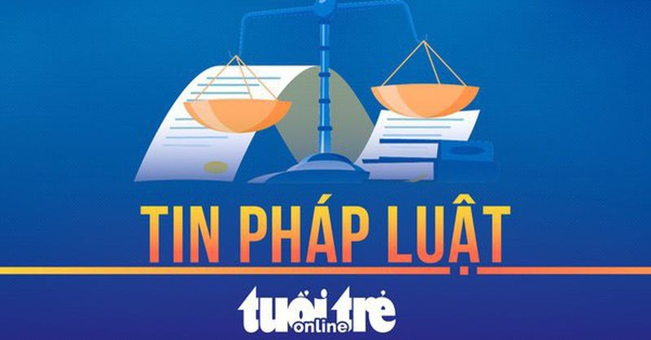
Nhóm thanh niên mang hung khí vào quán cà phê chém người tử vong 🔗 MOI
Theo thông tin ban đầu, khoảng 17h35 ngày 8-5, nhóm gồm năm thanh niên mang hung khí đến quán cà phê thuộc ấp 5, xã Tân Lộc rồi bất ngờ lao vào tấn công bốn thanh thiếu niên đang ngồi trong quán. Hai
50 năm chi nhánh Nhà xuất bản Kim Đồng tại TP.HCM: Nhìn vào trẻ thơ mà làm sách 🔗 MOI
Bộ truyện Doraemon do Nhà xuất bản Kim Đồng phát hành khiến bao bạn nhỏ mê mẩn - Ảnh tư liệu Việc chi nhánh Nhà xuất bản Kim Đồng tại TP.HCM đi tiên phong trong phát hành truyện Doraemon được xem là c
Tin tức sáng 9-5: Gọi 111 để bảo vệ trẻ em; Khoảng 14 triệu người mang gene bệnh tan máu bẩm sinh 🔗 MOI
Các em nhỏ biểu diễn trong lễ trao giải chiều 8-5 - Ảnh: BVCC Đề nghị triển khai rộng rãi chương trình sàng lọc gene bệnh tan máu bẩm sinh Viện Huyết học - Truyền máu Trung ương cho biết nhân ngày 8-5

Ấn phẩm 🔗 MOI
Tổng Biên tập: TS. Phạm Thu Phong Phó Tổng Biên tập: TS. Đỗ Văn Hải, TS.

Báo cáo tài chính doanh nghiệp 🔗 MOI
Quý 1/2026, VNG báo lãi sau thuế 125 tỷ đồng, trong khi cùng kỳ năm trước lỗ 15 tỷ đồng. Đây là mức lãi theo quý cao nhất mà VNG ghi nhận kể từ quý 2/2021..

Chính phủ với công dân 🔗 MOI
08/05/2026 (Chinhphu.vn) - Sinh viên Đỗ Thị Thư (Lào Cai) đang theo học Chuyên khoa I - chuyên ngành Lao (thuộc nhóm ngành sức khỏe, có tính chất đặc thù và độc... 08/05/2026 (Chinhphu.vn) - Bà Dương
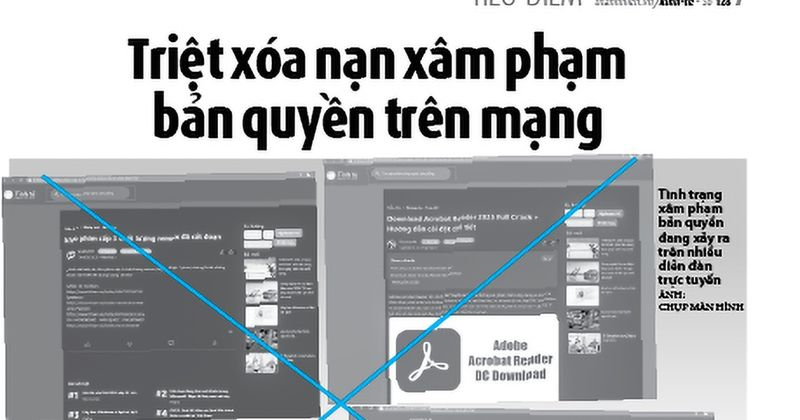
Lập lại kỷ cương thị trường nội dung số 🔗 MOI
Theo các chuyên gia, cùng với việc tăng chế tài xử lý, cần "siết" trách nhiệm của nền tảng số, cắt nguồn thu của nội dung lậu và hình thành văn hóa tiêu dùng nội dung hợp pháp. Bảo vệ môi trường sáng
Học lịch sử qua sân khấu học đường 🔗 MOI
Đoàn kịch Nữ sĩ Hồ Xuân Hương giao lưu cùng các sinh viên, giảng viên Sự thăng hoa từ sợi dây kết nối thế hệ Vở kịch Nữ sĩ Hồ Xuân Hương do Câu lạc bộ Sân khấu và Điện ảnh phối hợp Nhà hát Thế giới Tr
Lầu Năm Góc công bố các tài liệu mật liên quan đến UFO 🔗 MOI
Facebook Twitter Lưu bài viết Bản in Copy link Theo AFP, ngày 8/5, Lầu Năm Góc đã công bố đợt đầu tiên các hồ sơ mật liên quan tới các báo cáo về việc nhìn thấy vật thể bay không xác định (UFO), trong
Triển lãm ảnh “Gắn kết chiến lược Việt Nam-Lào” 🔗 MOI
Facebook Twitter Lưu bài viết Bản in Copy link Theo phóng viên TTXVN tại Lào, nhân dịp tổ chức Hội nghị thông tin về kết quả Đại hội đại biểu toàn quốc lần thứ XIV của Đảng và bầu cử đại biểu Quốc hội
Tuyển Việt Nam đại chiến Hàn Quốc giành vé World Cup 🔗 MOI
(PLO)- Chiến thắng Yemen 1-0 đã giúp tuyển Việt Nam nắm lợi thế lớn tại bảng C trong bối cảnh Hàn Quốc bị UAE cầm hòa, khiến thầy trò HLV Cristiano Roland đang có nhiều cơ hội để tiến vào tứ kết. Các
Quốc tế đánh giá cao chính sách ngoại giao chủ động của Việt Nam 🔗 MOI
Thông qua Việt Nam, Ấn Độ có thể mở rộng hiện diện kinh tế cũng như ảnh hưởng ở Đông Nam Á - khu vực có tăng trưởng cao. Chuyến thăm của Tổng Bí thư, Chủ tịch nước Tô Lâm cho thấy Việt Nam không chỉ n
Vun đắp nhịp cầu hữu nghị bền vững giữa Việt Nam và Sri Lanka 🔗 MOI
Những người bạn thân thiết ở quốc đảo xinh đẹp vui mừng đón Tổng Bí thư, Chủ tịch nước Tô Lâm và Đoàn đại biểu cấp cao Việt Nam trong ánh nắng rực rỡ hòa quyện với điệu nhảy nồng hậu, phóng khoáng tôn
Nigeria: Ít nhất 18 người dân bị phiến quân sát hại trong rừng 🔗 MOI
Facebook Twitter Lưu bài viết Bản in Copy link Ít nhất 18 người khai thác gỗ đã thiệt mạng trong một vụ tấn công do các tay súng Boko Haram tiến hành tại bang Borno, Đông Bắc Nigeria. Vụ việc diễn ra
Mong xử lý tận gốc nạn xâm phạm bản quyền trên mạng 🔗 MOI
Cùng vệt bài nói trên còn là bài viết câu chuyện việc "xem chùa" cần được chấm dứt từ trong suy nghĩ của mỗi người văn minh. Đa số ý kiến bạn đọc (BĐ) đều đồng tình đã đến lúc cần mạnh tay nhất với nạ
Võ sư viết rap kể chuyện tình tại đám cưới, hút triệu view 🔗 MOI
Trong video đăng tải dịp 30/4, chú rể Tấn Khang đứng trên sân khấu, đọc đoạn rap tự sáng tác. Bên cạnh, cô dâu Bích Hằng, 24 tuổi, thể hiện ca khúc "Nổi gió lên" . Nhiều khán giả để lại bình luận khen
Hành trình tiến sát cúp vô địch sau 4 thập niên 🔗 MOI
Rạng sáng 8-5, Aston Villa viết tiếp câu chuyện cổ tích tại đấu trường Europa League mùa này khi vượt qua đồng hương Nottingham Forest với tổng tỉ số 4-1. "Ngủ quên" tại Villa Park Đoàn quân xứ Birmin
Nâng cao chất lượng xét xử của tòa án các cấp 🔗 MOI
Phát biểu tại hội nghị, Chủ tịch Quốc hội Trần Thanh Mẫn khẳng định nói đến tòa án là nói đến ý nghĩa thiêng liêng của công lý, công bằng - sự liêm chính, công minh - niềm tin và chỗ dựa của nhân dân.
Lực đẩy từ những cột mốc lịch sử 🔗 MOI
Phối cảnh dự kiến tuyến metro Bến Thành - Thủ Thiêm đi ngầm dưới đường Mai Chí Thọ. Dự án được khởi công trong dịp 30-4 vừa qua Như vậy, sau lễ khởi công hàng loạt công trình, dự án trọng điểm vào dịp
Khoảnh khắc gây sốt của Hyun Bin - Son Ye Jin 🔗 MOI
Hyun Bin nói lời yêu với Son Ye Jin Tối 8/5, lễ trao giải Baeksang diễn ra tại COEX, quận Gangnam, Seoul, với sự dẫn dắt của bộ ba MC Shin Dong Yup, Park Bo Gum và Bae Suzy. Đây là lễ trao giải nghệ t
Du sơn ngoạn thủy: 'Phong Nha cốc tự rõ rành cảnh tiên' 🔗 MOI
"Danh sơn gặp khách hữu tình" Đèo Ngang là nơi ranh giới tự nhiên giữa Hà Tĩnh và Quảng Bình, đã đi vào ca dao xưa với câu "Đèo Ngang gánh nặng hai vai/Một vai Hà Tĩnh, một vai Quảng Bình". Địa danh ấ
Lâm Đồng 'chạy đua' hoàn thành hơn 2.000 căn nhà ở xã hội 🔗 MOI
UBND tỉnh Lâm Đồng vừa ban hành kế hoạch triển khai thực hiện chỉ tiêu phát triển nhà ở xã hội trên địa bàn tỉnh trong năm 2026, với mục tiêu đẩy nhanh tiến độ các dự án, đáp ứng nhu cầu nhà ở cho ngư
Thí điểm chế định luật sư công tại 8 bộ và 10 địa phương từ ngày 1/10/2026 🔗 MOI
Facebook Twitter Lưu bài viết Bản in Copy link Tại Nghị quyết số 24/2026/QH16 về việc thí điểm thực hiện chế định luật sư công, Quốc hội quyết nghị việc thí điểm chế định luật sư công được tổ chức và
An toàn lao động không thể quản lý kiểu cũ 🔗 MOI
Ngày 8-5, tại TP HCM, Tổng LĐLĐ Việt Nam tổ chức hội thảo "Công đoàn đổi mới và nâng cao hiệu quả công tác an toàn, vệ sinh lao động (AT-VSLĐ) trong kỷ nguyên số". Tại hội thảo, các đại biểu cùng nhận
Tuyên bố chung Việt Nam và Sri Lanka về việc nâng cấp quan hệ lên Đối tác Toàn diện 🔗 MOI
Trong khuôn khổ chuyến thăm cấp Nhà nước của Tổng Bí thư, Chủ tịch nước Tô Lâm và Đoàn đại biểu cấp cao Việt Nam tới Sri Lanka, hai bên đã ra "Tuyên bố chung giữa nước Cộng hòa Xã hội chủ nghĩa Việt N
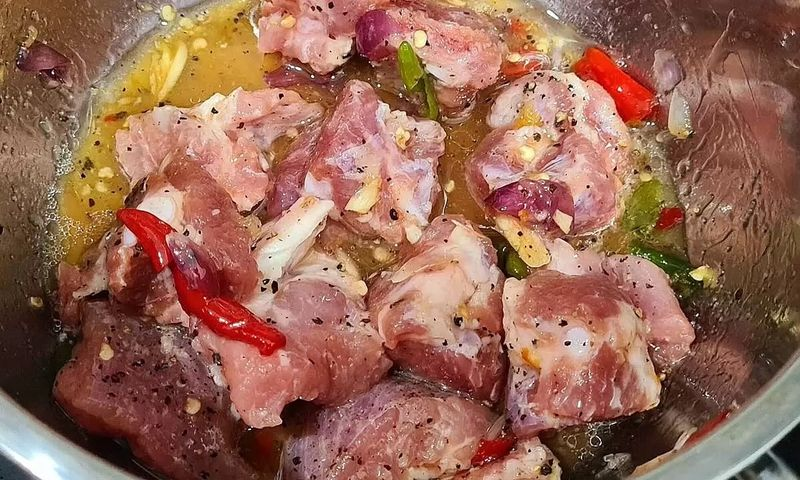
Bác sĩ cảnh báo thói quen ướp thịt qua đêm gây hại 🔗 MOI
Tiến sĩ Lê Thị Hương Giang, Trưởng khoa Tiết chế Dinh dưỡng - Bệnh viện 19-8 (Bộ Công An), cho biết ướp thịt từ tối hôm trước để sáng hôm sau chế biến là thói quen rất phổ biến trong nhiều gia đình, g
Tay vợt gốc Việt thắng tốc hành tại Rome Open 2026 🔗 MOI
Learner Tien vượt qua đối thủ người Bosnia với tỷ số 6-2, 6-1, qua đó ghi tên mình vào vòng tiếp theo của giải Masters 1000 trên mặt sân đất nện tại Italy. Trận đấu diễn ra với thế trận một chiều. Tay
Djokovic thua sốc tay vợt hạng 79 thế giới ở Rome 🔗 MOI
Highlights Novak Djokovic 1-2 Dino Prizmic ((nguồn: Tennis TV) Novak Djokovic chịu cú sốc lớn tại vòng 2 đơn nam Rome Open khi để thua ngược Dino Prizmic, tay vợt đang xếp hạng 79 thế giới. Đây là lần
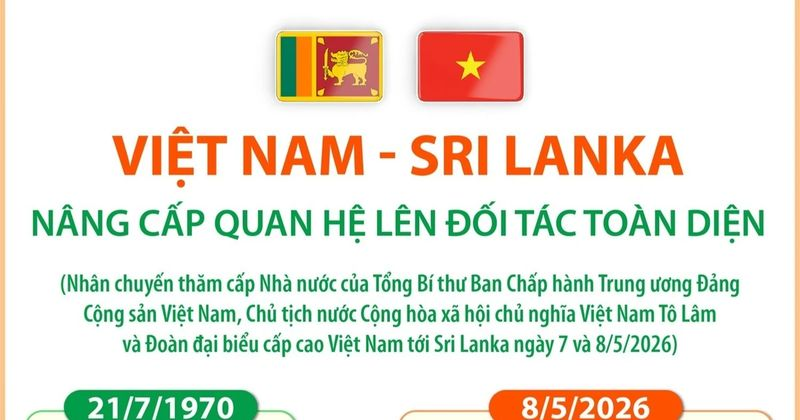
Việt Nam và Sri Lanka nâng cấp quan hệ lên Đối tác Toàn diện 🔗 MOI
Facebook Twitter Lưu bài viết Bản in Copy link Trong khuôn khổ chuyến thăm cấp Nhà nước của Tổng Bí thư, Chủ tịch nước Tô Lâm và Đoàn đại biểu cấp cao Việt Nam tới Sri Lanka, hai bên đã ra "Tuyên bố c
Bất chấp nguy hiểm, nhiều người bám vách đá leo núi Bà Đen ở khu vực cấm 🔗 MOI
Theo ban quản lý khu du lịch quốc gia núi Bà Đen (Tây Ninh), trên mạng xã hội thời gian gần đây xuất hiện nhiều tài khoản đăng tải cảnh người dân, du khách tự ý leo núi tại một số khu vực rừng cấm. Đâ
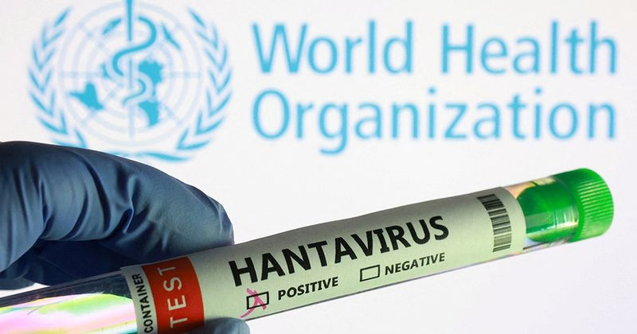
Các nước chạy đua ngăn chặn dịch bệnh 🔗 MOI
Giới chức Tây Ban Nha chuẩn bị tiếp nhận hơn 140 hành khách và thủy thủ đoàn của du thuyền MV Hondius xuất hiện nhiều ca nhiễm vi rút Andes (biến thể nguy hiểm có thể lây từ người sang người của vi rú
CLB Hà Nội đua tốp 3 🔗 MOI
Chiến thắng trước Đà Nẵng ở vòng 21 giúp đội bóng thủ đô chen chân vào nhóm 3 đội dẫn đầu và tiếp tục gây sức ép lên các đối thủ cạnh tranh trực tiếp. Sau 21 lượt đấu, Hà Nội tạm đứng vị trí thứ 3 và
U17 Việt Nam: Vượt qua U17 Hàn Quốc, tại sao không? 🔗 MOI
Thử thách lớn Không ai phủ nhận sức mạnh của U17 Hàn Quốc. Đội bóng trẻ xứ kim chi luôn nằm trong nhóm hàng đầu châu Á nhờ nền tảng đào tạo bài bản, cường độ thi đấu cao và tư duy chiến thuật hiện đại
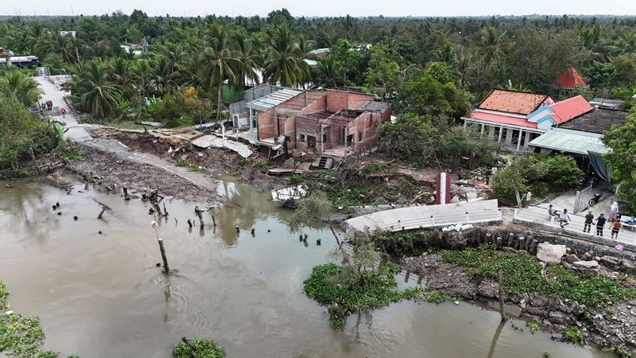
Cuộc sống đảo lộn vì sạt lở ở miền Tây 🔗 MOI
"Tôi đang dắt xe thì nghe cái đùng, chưa kịp định thần đã cùng chiếc xe rơi xuống hố sâu", bà Trần Thị Ly, 53 tuổi, nhớ lại thời điểm xảy ra sạt lở trước nhà ở xã Bình Phú, tỉnh Đồng Tháp, cách đây hơ
Ngày 9.5 là ngày gì? Lịch âm hôm nay là ngày lành tháng tốt, vì sao? 🔗 MOI
Dương lịch hôm nay là thứ bảy cuối tuần, đánh dấu năm 2026 trải qua ngày thứ 128. Theo lịch âm hôm nay 9.5 là ngày 23 tháng 3, theo cách gọi can chi là ngày Quý Mùi, tháng Nhâm Thìn, năm Bính Ngọ. Ngà
Cảnh giác "tội phạm ẩn" bạo hành trẻ em 🔗 MOI
Ngày 8-5, Thứ trưởng Bộ Y tế Nguyễn Tri Thức cùng đoàn công tác đã đến Bệnh viện Nhi Đồng 1 TP HCM thăm, tặng quà cho các bệnh nhi có hoàn cảnh khó khăn, đặc biệt là bé trai (2 tuổi) bị bạo hành đang
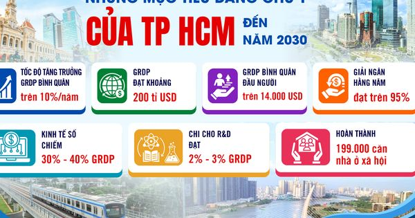
Mệnh lệnh tăng trưởng cho TPHCM 🔗 MOI
Chỉ thị mới của Thành ủy TPHCM không chỉ đặt mục tiêu tăng trưởng 2 con số mà còn là yêu cầu đổi mới tư duy điều hành, tháo điểm nghẽn và khơi thông toàn bộ nguồn lực phát triển của siêu đô thị lớn nh
Mở ra dư địa phát triển mới cho TP HCM 🔗 MOI
Sáng 8-5, HĐND TP HCM phối hợp Trường Đại học Luật TP HCM tổ chức hội thảo khoa học với chủ đề "Luật Đô thị đặc biệt - đột phá thể chế cho TP HCM". Đột phá của đột phá về thể chế Phát biểu khai mạc hộ
Hé lộ công ty đề xuất xây 2 tòa tháp 13 tầng tưởng niệm người quá cố giữa trung tâm Hà Nội 🔗 MOI
TIN MỚI Những ngày vừa qua, dư luận tại Hà Nội quan tâm tới việc điều chỉnh quy hoạch dự án Nhà tang lễ quận Thanh Xuân (phường Khương Đình, TP Hà Nội). Trong đó, chủ đầu tư dự án Công ty cổ phần Hồn
Mãn nhãn khai mạc Lễ hội Hoa Phượng Đỏ 2026 🔗 MOI
Mãn nhãn màn bắn pháo hoa khai mạc Lễ hội Hoa Phượng Đỏ - Hải Phòng 2026. Tối 8/5, khoảng 10.000 người dân và du khách tới xem chương trình nghệ thuật khai mạc Lễ hội Hoa Phượng Đỏ 2026 được dàn dựn
Giả vờ mua cây cảnh, giật dây chuyền vàng 🔗 MOI
Ngày 8/5, Phòng Cảnh sát hình sự Công an TP Đà Nẵng cho biết đang tạm giữ Võ Văn Tài (trú xã Xuân Phú) để điều tra về hành vi Cướp giật tài sản và Trộm cắp tài sản . Võ Văn Tài tại cơ quan công an. Ản
“Đại gia” Việt bán rau củ, thịt, cá kiếm hơn 6 tỷ mỗi giờ 🔗 MOI
“Đại gia” Việt bán rau củ, thịt, cá kiếm hơn 6 tỷ mỗi giờ Theo Hà Linh | 09/05/2026 06:49 AM | Kinh doanh Theo dõi Cafebiz.vn trên Mỗi ngày “đại gia” này lại mở mới thêm 3 cửa hàng chuyên bán rau củ,
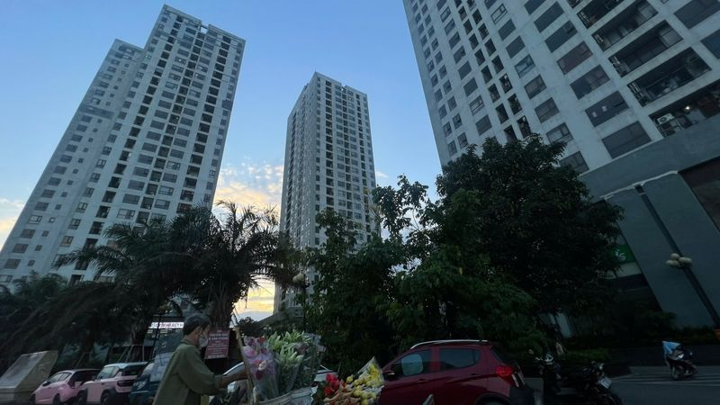
Hà Nội linh hoạt giải pháp “đánh thức” quỹ nhà tái định cư bỏ hoang 🔗 MOI
Theo TS. Nguyễn Văn Đính, Phó Chủ tịch Hiệp hội Bất động sản Việt Nam, Chủ tịch Hội Môi giới Bất động sản Việt Nam, trong bối cảnh Hà Nội đẩy mạnh phát triển đô thị và nhu cầu nhà ở tiếp tục gia tăng,
Nhận định Ninh Bình vs Hải Phòng: Tấn công top 3 V-League 🔗 MOI
Sau 21 vòng đấu, Ninh Bình đang tạm đứng ở vị trí thứ 4 trên BXH LPBank V-League với 38 điểm, kém Hà Nội FC 1 điểm ở vị trí thứ 3. Với mục tiêu top 3 mùa giải năm nay, đội bóng cố đô Hoa Lư quyết tâm
Vải thiều Bắc Ninh được giá, giá bán tại vườn từ 55.000 đến 70.000 đồng mỗi kg 🔗 MOI
Facebook Twitter Lưu bài viết Bản in Copy link Niên vụ năm 2026, toàn tỉnh Bắc Ninh có 29.800ha vải, sản lượng ước đạt khoảng 95.068 tấn, trong đó diện tích vải sớm 8.200ha, chiếm 27,5%, sản lượng kho
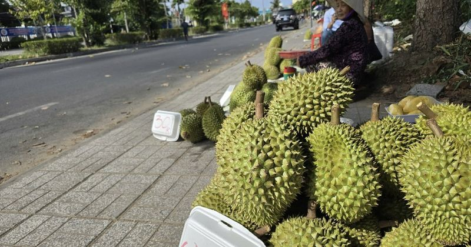
Đằng sau việc sầu riêng tràn ra lề đường 🔗 MOI
Sầu riêng loạn giá,vì sao? Một số tỉnh miền Tây hiện nay, nhiều nhà vườn tự hái sầu riêng mang ra đường bán với giá 20.000 - 30.000 đồng/kg do thương lái không mua. Đây được xem là mức giá thấp chưa t
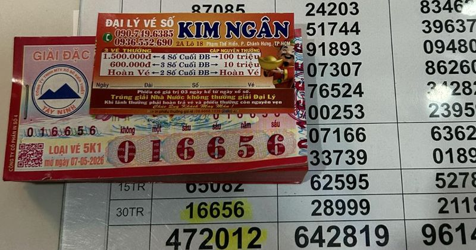
Mua 160 tờ vé số, một người ở TP.HCM trúng 4.8 tỉ đồng xổ số miền Nam 🔗 MOI
Đại lý vé số Kim Ngân ở TP.HCM thông báo bán trúng và đã đổi thưởng cho khách mua 160 tờ vé số trúng giải nhất xổ số miền Nam , tổng trị giá 4.8 tỉ đồng (chưa trừ thuế). Mua nguyên cây vé số 160 tờ, m

Kết quả bóng đá hôm nay 9/5 🔗 MOI
Kết quả bóng đá hôm nay NGÀY GIỜ TRẬN ĐẤU TRỰC TIẾP V-LEALGUE 2025/26 - VÒNG 22 08/05 18:00 SHB Đà Nẵng 2-0 Becamex TPHCM FPT Play, HTV Thể thao, MyTV, TV360, SCTV VĐQG TÂY BAN NHA 2025/26 – VÒNG 35 0
Người phụ nữ gom nước dừa thừa gây hiểu lầm ở khu du lịch 🔗 MOI
Sở Du lịch tỉnh Ninh Bình ngày 8-5 có thông tin về việc nhận được báo cáo của UBND xã Hải Thịnh, tỉnh Ninh Bình kết quả xác minh và xử lý các hành vi vi phạm trong kinh doanh du lịch tại khu du lịch l
Eo biển chiến lược đối mặt sóng gió (*): Quyền lực "người gác cổng" Bosphorus 🔗 MOI
Eo biển Bosphorus, một tuyến đường thủy hẹp nhưng quan trọng ở Istanbul - Thổ Nhĩ Kỳ, từ lâu đã đóng vai trò là điểm tựa địa chính trị kết nối châu Âu và châu Á. Cửa ngõ giữa các châu lục Quyền kiểm s
Uống nước dừa mỗi ngày: Lợi ích và rủi ro ít người để ý 🔗 MOI
Nước dừa mang lại nhiều lợi ích như bổ sung nước, cung cấp chất điện giải và có lợi cho sức khỏe tim mạch . Ngược lại, nếu uống quá thường xuyên hoặc không phù hợp với tình trạng sức khỏe, thức uống n
Nhan sắc 2 mỹ nhân Việt lọt vòng casting trực tiếp của Victoria's Secret 🔗 MOI
Victoria's Secret được thành lập năm 1977 tại California và nổi tiếng với quy trình tuyển chọn 3 vòng khắt khe. Ở vòng đầu, hồ sơ thí sinh bao gồm các chỉ số hình thể, bộ ảnh mặt mộc và một video giới
20 đại học sản sinh nhiều tỷ phú nhất thế giới 🔗 MOI
Trang Essay Humanizer tuần trước công bố danh sách đại học có nhiều cựu sinh viên là tỷ phú nhất thế giới, dựa trên tổng hợp hồ sơ của hơn 2.500 tỷ phú toàn cầu do Forbes công bố tháng 3. Kết quả cho
Carragher: 'Arsenal cần thắng hai trận nữa để trở thành bất tử' 🔗 MOI
Arsenal đang đứng trước ngưỡng cửa lịch sử. Những thắng lợi trước West Ham cuối tuần này và PSG vào cuối tháng sẽ chính thức đưa đoàn quân của Arteta sánh ngang với tập thể "Bất bại" (Invincibles) năm
Công ty dịch thuật cắt giảm 1/4 nhân sự do AI 🔗 MOI
Trong bài đăng trên LinkedIn tuần này, CEO kiêm nhà sáng lập DeepL Jarek Kutylowski cho biết công ty "đang trải qua sự chuyển đổi cấu trúc lớn về loại công việc tồn tại, người thực hiện và số người cầ
Gánh nặng lấy lại 'thể diện' dồn lên vai đội tuyển Thái Lan ở AFF Cup 2026 🔗 MOI
Hiện thực phũ phàng với bóng đá Thái Lan 16 HCV SEA Games và 7 chức vô địch AFF Cup là minh chứng rõ ràng nhất cho vị thế hàng đầu của bóng đá Thái Lan . Có giai đoạn, đội tuyển Thái Lan vô địch AFF C
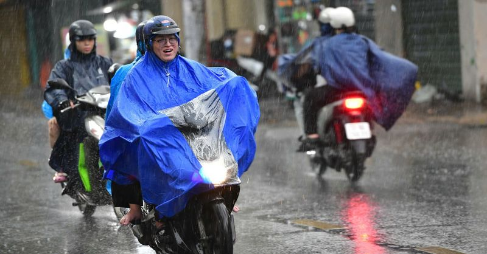
Thời tiết hôm nay 9-5: Bắc Bộ có nơi mưa to; Nam Bộ ngày nắng, chiều mưa 🔗 MOI
Hôm nay 9-5, Nam Bộ ngày nắng nóng, chiều tối mưa dông - Ảnh: DUYÊN PHAN Trung tâm Dự báo khí tượng thủy văn quốc gia cho biết hôm nay 9-5, thời tiết Bắc Bộ mưa rào và dông vài nơi. Tây Bắc Bộ có nơi
Khởi tố giám đốc công ty xây dựng để cột điện lăn gây chết người 🔗 MOI
Cơ quan điều tra thông báo quyết định khởi tố bị can - Ảnh: Công an tỉnh Lào Cai Ngày 26-4, Công an tỉnh Lào Cai cho biết Cơ quan cảnh sát điều tra Công an tỉnh đã ra quyết định khởi tố hai bị can liê
Chân dung doanh nghiệp 🔗 MOI
ĐHĐCĐ thường niên 2026 của Sacombank ghi nhận nhiều nội dung lớn: cập nhật tiến độ tái cơ cấu, nợ xấu ở mức 5,01%, kế hoạch lợi nhuận thận trọng.

Chỉ đạo, quyết định của Chính phủ - Thủ tướng Chính phủ 🔗 MOI
08/05/2026 (Chinhphu.vn) - Đó là một trong những nội dung tại Chỉ thị số 18/CT-TTg ngày 08/5/2026 về nâng cao chất lượng cán bộ, công chức chính quyền địa... 08/05/2026 (Chinhphu.vn) - Phó Thủ tướng H
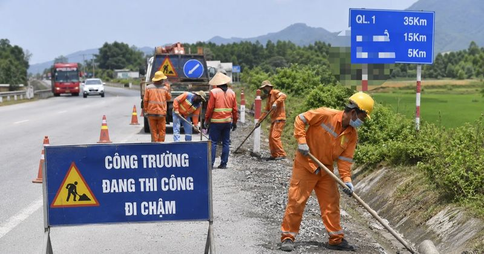
Hơn 750 công nhân duy tu đường bộ ở Quảng Trị mòn mỏi chờ lương suốt 4 tháng 🔗 MOI
Công nhân “đói lương” giữa nắng gió công trường Những ngày đầu tháng 5, trên nhiều tuyến quốc lộ và đường tỉnh ở Quảng Trị, công nhân duy tu đường bộ vẫn đều đặn có mặt từ sáng sớm để phát quang cây c
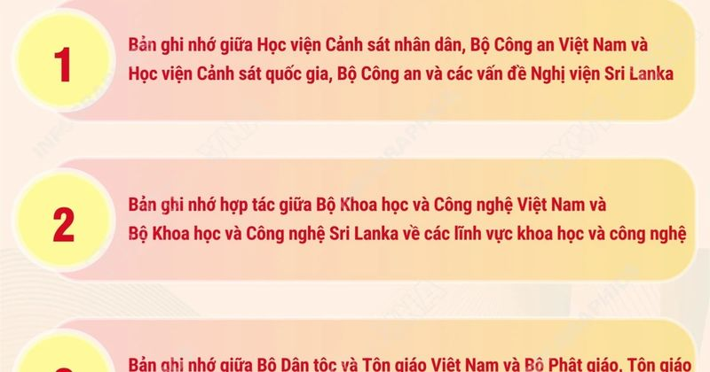
Các văn kiện hợp tác giữa Việt Nam và Sri Lanka 🔗 MOI
Facebook Twitter Lưu bài viết Bản in Copy link Các văn kiện gồm: Bản ghi nhớ giữa Học viện Cảnh sát nhân dân, Bộ Công an Việt Nam và Học viện Cảnh sát quốc gia, Bộ Công an và các vấn đề Nghị viện Sri
Phim thương hiệu ngoại và nội so kè phòng vé 🔗 MOI
Theo thống kê của trang Box Office Vietnam, đến trưa 8-5, phim "Mortal Kombat 2: Cuộc chiến sinh tử" đang dẫn đầu bảng xếp hạng doanh thu phòng vé Việt tính theo ngày. Sau thời gian này, vị trí đã tha
Việt Nam - Sri Lanka nhất trí thúc đẩy hợp tác khoa học công nghệ 🔗 MOI
Việt Nam - Sri Lanka ngày 8/5 ra tuyên bố chung về việc nâng cấp quan hệ lên Đối tác Toàn diện nhân chuyến thăm cấp nhà nước của Tổng Bí thư, Chủ tịch nước Tô Lâm. Hai bên cam kết tiếp tục củng cố và
Met Gala 2026 - vẻ đẹp trong sự ồn ào 🔗 MOI
Theo WWD , hôm 4/5, Met Gala 2026 lập kỷ lục với số tiền quyên góp lên tới 42 triệu USD cho Viện trang phục của Bảo tàng Nghệ thuật Metropolitan, New York, chỉ vài giờ trước khi những vị khách đầu tiê

Coi chừng nhiễm liên cầu lợn vì thói quen ăn tiết canh, thịt tái 🔗 MOI

Làm thế nào để lên thực đơn dinh dưỡng cho gia đình nhiều thế hệ? 🔗 MOI

Khám tiền hôn nhân ở nam và nữ khác nhau như thế nào? 🔗 MOI

Sử dụng thuốc tăng cường sinh lý để kéo dài 'cuộc yêu', có nên không? 🔗 MOI

Chồng không tinh trùng nhưng vợ vẫn sinh được con 'chính chủ', vì sao? 🔗 MOI

Viêm da tiết bã ở trẻ em khác gì ở người lớn? 🔗 MOI

Xóa xăm có xóa được triệt để hay không? 🔗 MOI

6 dấu hiệu thầm lặng cảnh báo đột quỵ trước 1 tháng 🔗 MOI
Theo The Times of India, 6 dấu hiệu của cơ thể cảnh báo trước 1 tháng khi đột quỵ sắp xảy ra: 1. Chóng mặt bất thường Cảm giác chóng mặt thường được cho là do bỏ bữa, mất nước hoặc đứng dậy quá nhanh.

Hệ thống Bảo hiểm xã hội Việt Nam: Tăng tốc thực hiện các chỉ tiêu nhiệm vụ năm 2025 🔗 MOI
Theo Bảo hiểm xã hội (BHXH) TP. Hồ Chí Minh, mặc dù năm 2025 gặp một số khó khăn, tuy nhiên tập thể cán bộ viên chức, người lao động BHXH TP. Hồ Chí Minh quyết tâm hoàn thành vượt chỉ tiêu giao, với s
Khánh Tâm đoạt giải nhất Tài năng sinh viên cải lương 2026 🔗 MOI
Khánh Tâm (trái) trong tiết mục Người cáo với sự trợ diễn của nghệ sĩ Hoàng Quốc Thanh - Ảnh: LINH ĐOAN Trong tiết mục Người cáo của tác giả Lê Duy Hạnh, Khánh Tâm hóa thân thành nhân vật Đông Nhật. K
Bruno Fernandes bất ngờ vượt mặt Erling Haaland và Declan Rice 🔗 MOI
Bruno giành danh hiệu Cầu thủ xuất sắc nhất mùa của Hiệp hội Nhà báo bóng đá Anh - Ảnh: AP Bruno Fernandes nhận 45% số phiếu bầu, vượt qua Declan Rice và Erling Haaland trong cuộc đua giành danh hiệu
Sau giải nghệ, 'nữ hoàng tennis' Sharapova ngồi vào hội đồng quản trị tập đoàn tỉ đô 🔗 MOI
Bà Sharapova trong những bộ trang phục tennis được thiết kế riêng tại US Open 2007, Wimbledon 2008 và French Open 2011 - Ảnh ghép của NYT, GETTY IMAGES và AP Sharapova ngồi vào hội đồng quản trị tập đ

Nhật Bản ra mắt 'máy giặt người' trị giá 385.000 USD, làm sạch từ đầu đến chân trong 15 phút 🔗 MOI
Thống đốc Yoshimura Yoshifumi của tỉnh Osaka trải nghiệm máy giặt người Mirai - Ảnh: SISA COMMUNICATION YOUTUBE Theo trang Interesting Engineer ngày 30-11, Công ty Science Inc. của Nhật Bản vừa chính
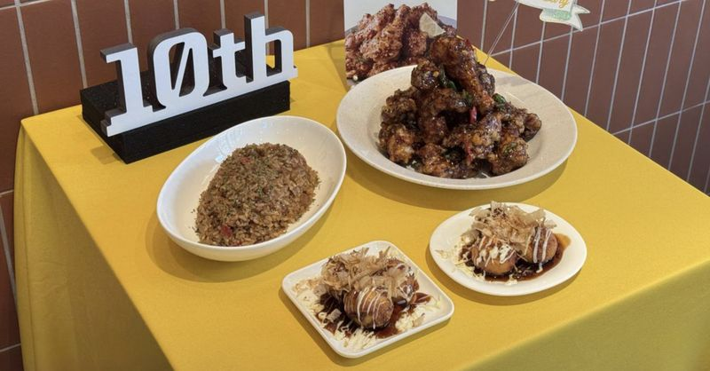
Chuỗi gà rán hàng đầu Hàn Quốc gia nhập thị trường Việt Nam 🔗 MOI
Món gà rán Matcho King nổi tiếng của BHC Chicken - Ảnh: Dining Brands Group Ngày 8-5, Dining Brands Group, công ty mẹ của chuỗi gà rán Hàn Quốc BHC, cho biết họ đang tiến hành bước đầu tiên để gia nhậ

Hoàn thiện khung khổ pháp lý về tiết kiệm 🔗 MOI
Pháp luật Trong công cuộc phòng, chống lãng phí hiện nay khó có thể tránh khỏi những khó khăn, nguy hiểm, ảnh hưởng tới người đấu tranh chống lãng phí. Do đó, việc bảo vệ người cung cấp thông tin phát

Cải cách tài chính công thúc đẩy tăng trưởng 🔗 MOI
Pháp luật Trong những năm qua, cùng với việc đẩy mạnh tiến trình xây dựng Nhà nước pháp quyền Việt Nam xã hội chủ nghĩa, công tác xây dựng và hoàn thiện hệ thống pháp luật đã đạt được nhiều thành tựu

Thông cáo báo chí 🔗 MOI
08/05/2026 (Chinhphu.vn) - Văn phòng Chính phủ vừa có Thông cáo báo chí chỉ đạo, điều hành của Chính phủ, Thủ tướng Chính phủ ngày 8/5/2026. 07/05/2026 (Chinhphu.vn) - Văn phòng Chính phủ vừa có Thông
bảng giá truyền thông 🔗 MOI
Trường tiểu học tổ chức ‘lớp học thông minh', thu hơn 10 triệu đồng/phụ huynh 🔗 MOI
Mới đây, thông tin phụ huynh muốn cho con theo học “lớp học thông minh” tại Trường Tiểu học Nguyễn Du (phường Thành Sen, Hà Tĩnh) phải đóng khoảng 10 triệu đồng để trang bị thiết bị học tập đã gây xôn
Al Hilal vô địch King’s Cup, chờ 'chung kết' với Al Nassr và Ronaldo 🔗 MOI
Al Hilal một lần nữa chứng minh bản lĩnh của ông lớn bóng đá Saudi Arabia khi ngược dòng đánh bại Al Kholood 2-1 trong trận chung kết King’s Cup. Dù sớm nhận “gáo nước lạnh”, đội bóng của HLV Simone I
Thời tiết ngày 9/5: Bắc Bộ có nơi mưa to, Nam Bộ nắng nóng 🔗 MOI
Theo Trung tâm Dự báo khí tượng thủy văn quốc gia, ngày và đêm 9/5, ở khu vực vùng núi Bắc Bộ có mưa rào và dông rải rác với lượng mưa 10-30mm, cục bộ có nơi mưa to hơn 50mm. Khu vực Hà Nội trời nhiều
Quy định chi tiết một số điều và biện pháp thi hành Luật Trí tuệ nhân tạo 🔗 MOI
Facebook Twitter Lưu bài viết Bản in Copy link Chính phủ ban hành Nghị định số 142/2026/NĐ-CP quy định chi tiết một số điều và biện pháp thi hành Luật Trí tuệ nhân tạo. Nhà cung cấp phải thực hiện phâ
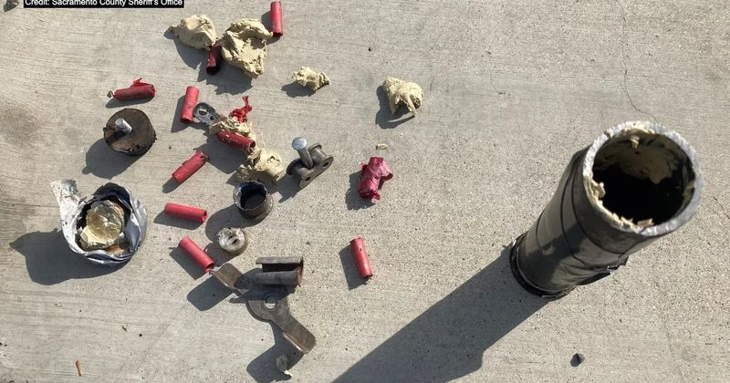
Brazil: Nổ "bom tự chế" tại trường học, nhiều học sinh bị thương 🔗 MOI
Facebook Twitter Lưu bài viết Bản in Copy link Ngày 8/5, một "quả bom tự chế" đã phát nổ tại một trường trung học ở ngoại ô thành phố Rio de Janeiro của Brazil, khiến 10 học sinh bị thương nhẹ. Theo c
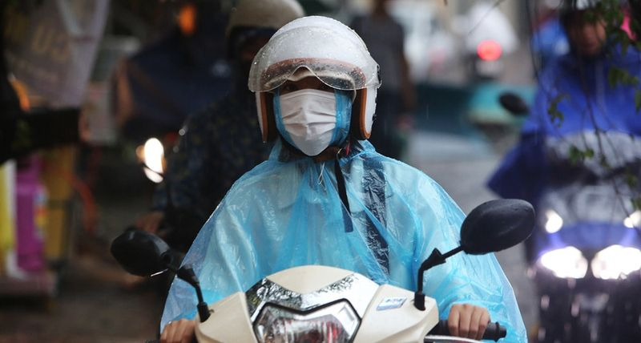
Dự báo thời tiết 9/5/2026: Miền Bắc vẫn có mưa giông, Nam Bộ gia tăng nắng nóng 🔗 MOI
Theo Trung tâm Dự báo khí tượng thủy văn quốc gia, ngày 9/5, Bắc Bộ có mưa rào và giông vài nơi, riêng khu vực Tây Bắc Bộ có mưa rào và giông rải rác với lượng mưa 10-30mm, cục bộ có nơi mưa to trên 5
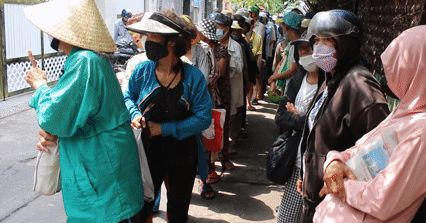
Người già, bệnh nhân ở TPHCM xếp hàng dài chờ mua cơm giá 1.000 đồng 🔗 MOI
Người già, bệnh nhân, lao động nghèo xếp hàng mua cơm giá 1.000 đồng Cơm 1.000 đồng 9h sáng, dù đi lại khó khăn, cụ Lê Thị Cơ (94 tuổi, phường Phú Thọ, TPHCM ) vẫn cố gắng có mặt tại con hẻm 525 đường
Hành trình mới, tầm vóc mới của quan hệ giữa Việt Nam và các bạn bè Nam Á 🔗 MOI
Với những kết quả mang tính bước ngoặt, chuyến thăm Ấn Độ và Sri Lanka của Tổng Bí thư, Chủ tịch nước Tô Lâm là dấu mốc lịch sử quan trọng, đưa quan hệ giữa Việt Nam với các quốc gia Nam Á vươn lên tầ
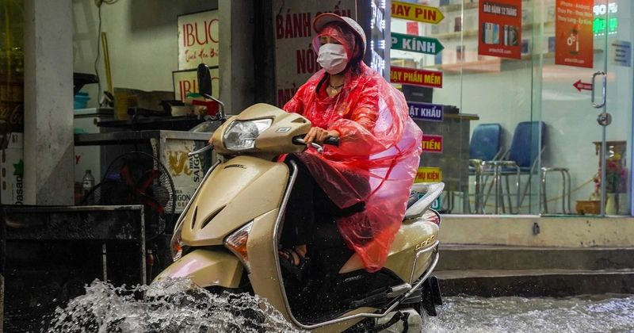
Miền Bắc lại sắp đón mưa lớn 🔗 MOI
Khu vực Đông Bắc Bộ hôm nay nhiều mây, có mưa rào và dông vài nơi, riêng khu vực vùng núi chiều tối và đêm có mưa rào và dông rải rác, cục bộ có nơi mưa to. Gió đông bắc cấp 2-3. Trong mưa dông có khả
Giải mã bí mật của ma cà rồng ở Việt Nam 🔗 MOI
Ma cà rồng “made in Việt Nam” Trong buổi gặp gỡ độc giả nhân ra mắt cuốn sách Ma cà rồng, ma quỷ tưởng tượng và bản sắc xã hội Thái (Tao Đàn và NXB Phụ Nữ ấn hành), tác giả Nguyễn Mạnh Tiến cho biết,
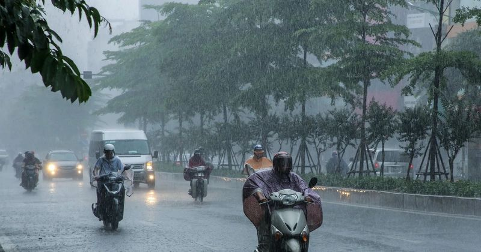
Thời tiết ngày 9/5: Bắc Bộ mưa dông, Nam Bộ tiếp tục nắng nóng gay gắt 🔗 MOI
Facebook Twitter Lưu bài viết Bản in Copy link Theo Trung tâm Dự báo Khí tượng Thủy văn Quốc gia, ngày hôm nay (9/5), Bắc Bộ có mưa rào và dông rải rác, cục bộ có nơi mưa to, nền nhiệt duy trì ở mức m
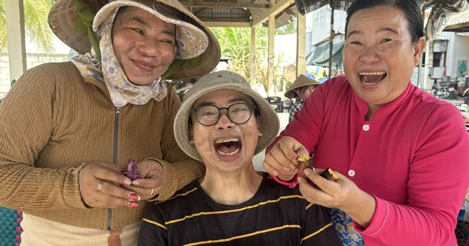
'Chợ An Khương càng ế càng ăn': Loạt clip miền Tây khiến dân mạng thích thú 🔗 MOI
Mở đầu bằng câu nói quen thuộc “chợ An Khương càng ế càng ăn”, những đoạn clip nấu ăn giản dị nhưng đầy tiếng cười ở miền Tây nhanh chóng thu hút sự quan tâm của nhiều người. Trong video, người thì kh
Bắc Ninh xử phạt 9 bếp ăn tập thể vi phạm an toàn thực phẩm 🔗 MOI
Theo Chi cục An toàn thực phẩm tỉnh Bắc Ninh, 2 đoàn kiểm tra liên ngành đã tiến hành kiểm tra đột xuất 13 cơ sở bếp ăn tập thể trên địa bàn tỉnh. Trong đó, 1 cơ sở đã ngừng hoạt động, còn 12 cơ sở đư
Nhận định Liverpool vs Chelsea: Quyết chiến vì vé Champions League 🔗 MOI
Chỉ vài tuần trước, cuộc đua lấy vé Champions League dường như sẽ vô cùng gay cấn, với MU, Liverpool, Aston Villa và Chelsea đều cạnh tranh từng điểm số. Nhưng bước sang vòng 36, kết quả về cơ bản đã
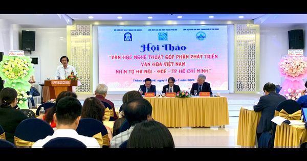
Văn học nghệ thuật kiến tạo hệ giá trị Việt Nam 🔗 MOI
Ngày 8-5, tại TP Huế đã diễn ra hội thảo "Văn học nghệ thuật góp phần phát triển văn hóa Việt Nam - nhìn từ Hà Nội - Huế - TP HCM" với sự tham gia của đông đảo giới văn nghệ sĩ, nhà nghiên cứu trong c
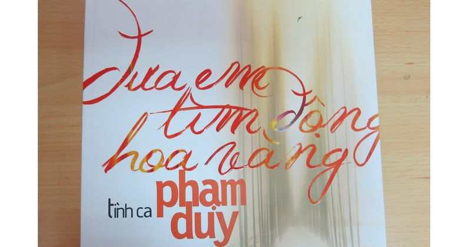
Vĩnh biệt thi sĩ Phạm Thiên Thư: 'Khóc ta xin nhỏ lệ vào thiên thu' 🔗 MOI
Phải nói ngay rằng chính nhạc sĩ Phạm Duy đã đưa tên tuổi nhà thơ Phạm Thiên Thư trở nên quen thuộc với công chúng, nhất là giới yêu thích âm nhạc. Năm 1971, ca khúc Ngày xưa Hoàng Thị (thơ Phạm Thiên
MU ra quyết định cuối cùng về thương vụ chiêu mộ Cole Palmer 🔗 MOI
(PLO)- MU đưa ra quyết định cuối cùng về thương vụ Cole Palmer trong kế hoạch bán tháo cầu thủ tại Old Trafford. MU được cho là đang quan tâm đến việc chiêu mộ ngôi sao của Chelsea và đội tuyển Anh, C
Real Madrid chính thức ra án phạt Valverde và Tchouameni 🔗 MOI
Valverde và Tchouameni bị phạt nửa triệu euro Real Madrid đang trải qua những ngày “đại loạn” đúng nghĩa. Họ gần như trắng tay ở mùa giải này và mọi thứ còn tệ hại hơn khi các ngôi sao ở Bernabeu mâu
Báo Pháp Luật TP. Hồ Chí Minh 🔗 MOI
Tiền vệ Fernandes cho Rice, Haaland "ngửi khói" 🔗 MOI
Nhạc trưởng 31 tuổi nhận 45% số phiếu bầu, vượt qua tiền vệ Declan Rice của Arsenal để đứng đầu danh sách do FWA bình chọn. Tiền đạo Erling Haaland (Man City) xếp thứ ba, trong khi 3 ngôi sao khác của
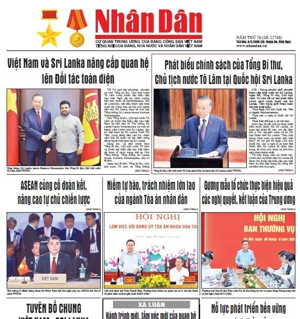
Báo Nhân Dân số 25740 🔗 MOI
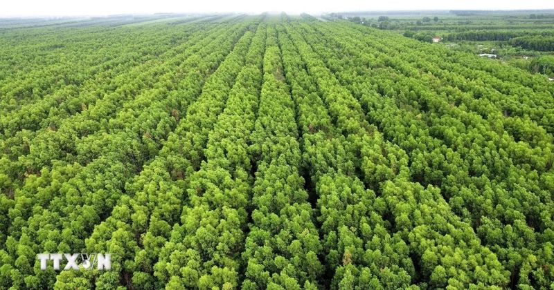
Cà Mau: Hơn 50.000 ha rừng đối diện nguy cơ cháy cao 🔗 MOI
Facebook Twitter Lưu bài viết Bản in Copy link Ban Chỉ huy phòng cháy, chữa cháy rừng tỉnh Cà Mau đề nghị các chủ rừng, địa phương, các đơn vị có liên quan tăng cường thực hiện các biện pháp đảm bảo a
🔗 MOI
Bảo tàng Hồ Chí Minh - Bến Nhà Rồng (phường Xóm Chiếu) do Pháp xây năm 1863, nổi tiếng gắn với sự kiện ngày 5/6/1911, người thanh niên Nguyễn Tất Thành xuống tàu bắt đầu hành trình tìm đường cứu nước.
Khuyến cáo phòng bệnh do virus Hanta 🔗 MOI
Không tiếp xúc trực tiếp với chuột PGS-TS Trần Đắc Phu, cố vấn Trung tâm Đáp ứng khẩn cấp sự kiện y tế công cộng VN, nguyên Cục trưởng Cục Phòng bệnh (Bộ Y tế), lưu ý người dân không tiếp xúc trực tiế
Tìm ra thủ phạm gây ngộ độc cho 64 người ở Quảng Trị 🔗 MOI
Ngày 8/5, bác sĩ Đỗ Quốc Tiệp, Phó Giám đốc Trung tâm Kiểm soát bệnh tật (CDC) tỉnh Quảng Trị cho biết, đơn vị đã nhận được kết quả kiểm nghiệm các mẫu liên quan vụ nghi ngộ độc thực phẩm xảy ra tại x
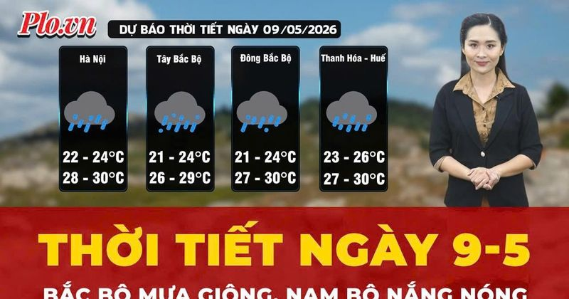
Dự báo thời tiết ngày 9-5: Bắc Bộ mưa giông, Nam Bộ nắng nóng 🔗 MOI
(PLO)- Theo nhận định mới nhất của cơ quan khí tượng, dự báo thời tiết cả nước từ đêm 8-5 đến ngày 10-5 tiếp tục có sự phân hóa rõ rệt giữa các khu vực. Theo Trung tâm dự báo khí tượng thuỷ văn quốc g
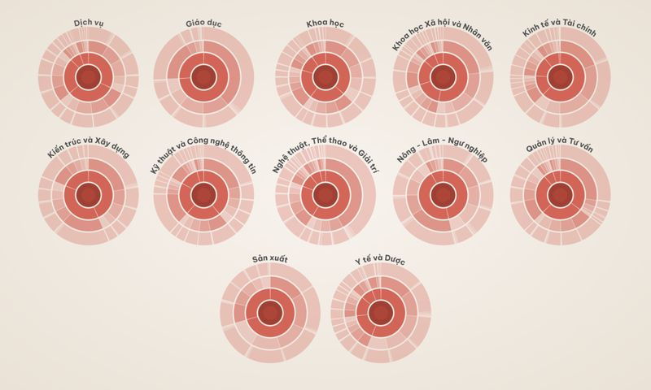
Con đường sự nghiệp từ ngành học đến ngành nghề 🔗 MOI
Giá bạc hôm nay 9/5/2026 xoay chiều bất ngờ, bạc thỏi vọt lên 🔗 MOI
Giá bạc trong nước hôm nay 9/5/2026 Kết phiên giao dịch 8/5, thị trường bạc trong nước ghi nhận cú đảo chiều bất ngờ vào cuối buổi chiều, đưa giá kim loại quý này tiệm cận ngưỡng 84 triệu đồng/kg. Tại
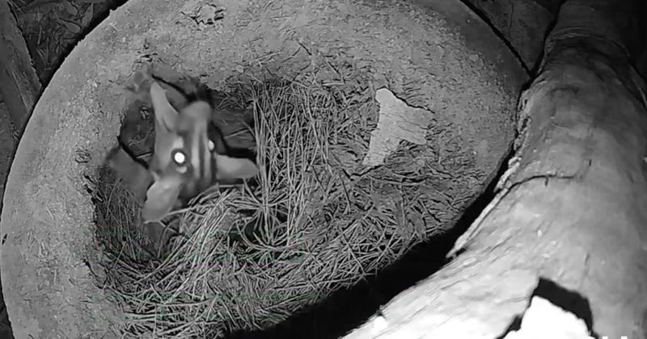
Clip cầy vằn bỏ 'nhà gỗ', tự làm ổ sinh con như ngoài tự nhiên 🔗 MOI
Theo clip dù khu vực nuôi đã chuẩn bị những hộp gỗ làm nơi trú ẩn an toàn, cầy vằn mẹ vẫn chủ động tìm một góc khuất bên ngoài khu chuồng bán hoang dã. Đây chính là cách mà loài cầy vằn hoang dã vẫn l
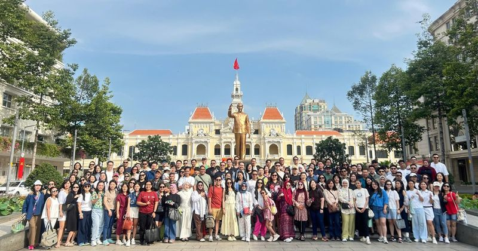
Đón hàng ngàn khách MICE tới TP.HCM 🔗 MOI
Khách MICE quốc tế đổ về TP.HCM Những ngày đầu tháng 5, gần 1.000 khách Indonesia đang hào hứng tham quan, khám phá và mua sắm tại TP.HCM cùng các tỉnh miền Tây. Đây là đoàn khách đầu tiên được Sở Du
[Video] Dự báo thời tiết ngày 9/5/2026: Bắc Bộ mát mẻ, Nam Bộ tiếp tục oi nóng 🔗 MOI
Từ sáng sớm nay, khu vực Bắc Bộ phổ biến nhiều mây, có mưa rào và dông rải rác, thời tiết tương đối mát mẻ và dễ chịu. Tại khu vực vùng núi, nền nhiệt giảm thấp hơn, trời se lạnh, một số nơi vùng núi
Căn cứ pháp lý để kết tội bị bãi bỏ, cựu hiệu trưởng ở Hà Nội sẽ trắng án? 🔗 MOI
Mới đây, ngày 5-5, UBND TP Hà Nội đã có quyết định bãi bỏ toàn bộ Quyết định 22/2013 của UBND TP Hà Nội về dạy thêm, học thêm trên địa bàn. Quyết định 22/2013 là căn cứ quan trọng mà TAND khu vực 1 -
Có thể giảm áp lực vào lớp 10 công lập hay không ? 🔗 MOI
Như Báo Thanh Niên đã thông tin, cập nhật từ Sở GD-ĐT TP.HCM cho thấy tổng chỉ tiêu tuyển sinh lớp 10 của 181 trường THPT công lập năm nay xấp xỉ 120.000 học sinh (HS); có tổng 151.254 HS đăng ký nguy
Câu view: Đừng đùa với pháp luật! 🔗 MOI
Thời gian qua, mạng xã hội liên tục xuất hiện các clip gây sốc nhằm thu hút sự chú ý của cộng đồng mạng. Từ cảnh ăn đồ sống, tự hành hạ bản thân, dàn cảnh đánh nhau, cho đến các màn cầm hung khí lives
Điều đặc biệt về đồng phục của nhân viên hỏa xa năm 1946 🔗 MOI
Mẫu trang phục nhân viên đường sắt được phục chế. Video: LL. Tổng Công ty Đường sắt Việt Nam (VNR) vừa tổ chức duyệt lần đầu các mẫu đồng phục, phù hiệu và cấp hiệu cho nhân viên sở hỏa xa.
Từ cú sốc 'treo kim' đến bác sĩ cắt đường sống của u gan 🔗 MOI
Cuối năm 2025, anh Vinh (35 tuổi, quê Thanh Hóa) được chẩn đoán ung thư gan với khối u 10cm. Sau khi thăm khám tại nhiều bệnh viện phía Bắc, anh rơi vào trạng thái hoang mang. Vợ chồng anh gom góp tiề
TP.HCM dư lao động ngành dịch vụ, nhà hàng, thiếu thợ lành nghề 🔗 MOI
Thông tin trên nêu trong Báo cáo thị trường lao động, việc làm tháng 4.2026 của Trung tâm Dịch vụ việc làm TP.HCM (thuộc Sở Nội vụ TP.HCM). Thống kê nhu cầu người tìm việc - việc tìm người tháng 4 the
Chỉ lệnh đặc biệt từ Thủ tướng 🔗 MOI
LTS: Ông Lê Minh Hưng nhậm chức Thủ tướng được hơn 1 tháng (từ 7/4/2026). Trên cương vị người đứng đầu Chính phủ, ông bắt đầu nhiệm kỳ mới bằng những chỉ đạo điều hành "nóng" ở nhiều lĩnh vực, ông cũn
14 triệu người Việt mang gen thalassemia mà không hay biết 🔗 MOI
Hàng triệu người Việt mang gen bệnh thalassemia (tan máu bẩm sinh) mà không hề hay biết, trong khi mỗi năm vẫn có khoảng 8.000 trẻ sinh ra mắc bệnh ở nhiều mức độ khác nhau. Thông tin được chia sẻ tại
Hà Nội bãi bỏ quyết định về dạy thêm, học thêm sau đề nghị của Bộ Tư pháp 🔗 MOI
Ngày 8-5, theo thông tin từ Cục Kiểm tra văn bản và Tổ chức thi hành pháp luật (Bộ Tư pháp), trên cơ sở phản ánh từ công dân và cơ quan báo chí, đơn vị đã tiến hành kiểm tra Quyết định số 22/2013/QĐ-U
Mua lại đất đơn vị quốc phòng giao bằng giấy viết tay, có được cấp sổ đỏ? 🔗 MOI
Một người dân cho biết, năm 2003, ông được đơn vị thuộc Bộ Quốc phòng giao đất làm nhà ở. Sau đó, thửa đất được chuyển nhượng bằng giấy tay cho người khác vào năm 2005. Từ đó tới nay, chủ mới sử dụng

Tử vi ngày 9 tháng 5: Con giáp nào may mắn hôm nay? 🔗 MOI
Tuổi Tí trong tử vi ngày 9 tháng 5 có thể nhận ra một cách làm quen thuộc không còn hiệu quả như trước. Khi dám thử hướng mới, bạn sẽ thấy kết quả khả quan hơn. Tài lộc có tín hiệu cải thiện từ sự tha
Chi cục trưởng 'bật đèn xanh' cho chuyên viên nhận tiền hối lộ 🔗 MOI
Như VietNamNet đã đưa tin , VKSND Tối cao vừa hoàn tất cáo trạng truy tố bị can Vũ Mạnh Cường (Giám đốc Công ty Dược Quốc tế, cổ đông Công ty Rance Pharma, Công ty Hacofood) về các tội Đưa hối lộ, Vi
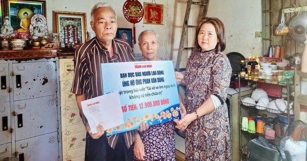
Thắp lại hy vọng cho gia đình bác tài xế xe ôm 🔗 MOI
Tính đến ngày 6-5, bạn đọc Báo Người Lao Động đã hỗ trợ ông Phan Văn Dũng (SN 1960; tạm trú tại địa chỉ 2/17 Lê Đức Thọ, phường Hạnh Thông, TP HCM) số tiền 12,9 triệu đồng (trong đó, cô Hạnh và những
Mệt mỏi do nắng nóng, bác sĩ chỉ 5 thực phẩm giúp cơ thể 'hạ nhiệt' 🔗 MOI
Bác sĩ chuyên khoa 1 Nguyễn Trần Như Thủy, Bệnh viện Đại học Y Dược TP.HCM - cơ sở 3, cho biết trong những ngày nắng nóng , bên cạnh việc chống nắng, làm sạch da đúng cách, dưỡng ẩm phù hợp và ngủ đủ
Công an Hà Nội đang siết chặt lấn chiếm vỉa hè như thế nào 🔗 MOI
Từ 13/12/2025, Hà Nội triển khai kế hoạch 332 để "giành lại" vỉa hè cho người đi bộ. Công an ngoài nhắc nhở, xử lý trực tiếp còn "phạt nguội" thông qua 1.873 camera AI được bố trí, lắp đặt trọng điểm

Google ra mắt Gemma 4, AI chạy offline trên thiết bị cá nhân 🔗 MOI
Gemma 4 chạy trực tiếp trên thiết bị cá nhân - Ảnh: THOMAS FULLER Trong bối cảnh trí tuệ nhân tạo vẫn phụ thuộc vào hạ tầng đám mây, việc một mô hình có thể hoạt động trực tiếp trên thiết bị cá nhân đ
Bữa sáng với món này giúp huyết áp ổn định hơn 🔗 MOI
Bơ giàu kali và chất béo tốt cho huyết áp, tim mạch Chất xơ trong bơ giúp no lâu và ổn định năng lượng Nên ăn bơ với khẩu phần vừa phải, kết hợp thực phẩm tươi lành mạnh Bữa sáng được xem là một trong
5 thực phẩm nên hạn chế sau tuổi 50 🔗 MOI
Những thói quen ăn uống ở tuổi 50 có thể ảnh hưởng lớn đến sức khỏe khi về già. Hạn chế dùng một số loại thực phẩm ở độ tuổi này có thể giúp ích. Thực phẩm nhiều muối Sau tuổi 50, bạn nên giảm lượng m
Cổ phiếu FPT “thủng” đáy, vốn hóa bốc hơi hơn 40.000 tỷ đồng từ đầu năm 🔗 MOI
FPT: Giá hiện tại Thay đổi Xem hồ sơ doanh nghiệp TIN MỚI Cổ phiếu FPT của Tập đoàn FPT tiếp tục trở thành tâm điểm chú ý trên thị trường khi nối dài chuỗi giảm mạnh sang phiên thứ ba liên tiếp. Kết p
Tạo website chỉ trong vài phút với AI 'Made in Vietnam' 🔗 MOI
Công nghệ AI hỗ trợ lập trình viên tạo code dựa trên ý tưởng. Trong bối cảnh chuyển đổi số ngày càng mạnh mẽ, việc phát triển phần mềm và website truyền thống đòi hỏi nhiều thời gian và nguồn
Bao Phương Vinh về nhì ở Giải Vô địch billiards châu Á trên sân nhà 🔗 MOI
Cảm giác tiếc nuối tràn ngập các dãy khán đài Nhà Thi đấu TDTT Hồ Xuân Hương (TP HCM), nơi đang diễn ra Giải Vô địch billiards carom châu Á 2026, sau khi trận chung kết nội dung carom 3 băng nam kết t
BLV Quang Huy làm Phó Chủ tịch LĐ Quần vợt Việt Nam, giới thiệu đại sứ H’Hen Niê 🔗 MOI
Trong khuôn khổ Hội nghị Ban Chấp hành thường niên năm 2026 diễn ra ngày 8-5 tại TP HCM, Liên đoàn Quần vợt Việt Nam (VTF) đã tổ chức chuỗi sự kiện trọng điểm gồm lễ ký kết hợp tác với các đối tác chi
An ninh mạng Việt Nam trước thách thức kép: APT và camera giá rẻ 🔗 MOI
Tấn công có chủ đích APT hiện là một trong những rủi ro lớn về an ninh mạng - Ảnh: DRIZ Ngày 18-12, Trung tâm Thông tin, Thống kê và Ứng dụng tiến bộ khoa học công nghệ (Sở Khoa học và Công nghệ TP.HC

CMC OpenAI phát triển mô hình AI pháp lý tiếng Việt 🔗 MOI
Bộ chuẩn đánh giá VLegal - Bench của nhóm nghiên cứu C-OpenAI đăng ký trên cổng arXiv của Trường đại học Cornell - Mỹ phiên bản mới nhất cập nhật ngày 25-12-2025. CMC OpenAI , công t
Nghiên cứu thị trường 🔗 MOI
9 tháng đầu năm 2025, CPI tăng 3,27%, lạm phát cơ bản tăng 3,19%, Cục Thống kê đánh giá lạm phát 'đang trong tầm kiểm soát'.
Câu chuyện thương trường 🔗 MOI
Các dự án tập trung vào các lĩnh vực công nghiệp, hạ tầng, xử lý rác thải, thiết bị y tế, vật tư sản xuất nông nghiệp, may mặc, thương mại, dịch vụ tổng hợp, chế biến nông sản.
Dấu hiệu ban đêm cảnh báo gan, thận gặp vấn đề 🔗 MOI
Giấc ngủ là thời gian cơ thể phục hồi và tái tạo năng lượng. Ban đêm, nhiều chức năng sinh lý thay đổi nên một số vấn đề sức khỏe có thể biểu hiện rõ hơn, đặc biệt liên quan đến hệ thần kinh, hô hấp,

'Học đến khi tan đá' đang hút giới trẻ 🔗 MOI
"Học đến khi tan đá" đang trở thành trào lưu cuốn hút nhiều bạn trẻ trên mạng xã hội - Ảnh chụp màn hình Bỏ điện thoại xuống, tập trung "học đến khi tan đá" Người tham gia thử thách sẽ để một cục đá l

AirSnitch có thể chặn và theo dõi dữ liệu WiFi mà không cần mật khẩu 🔗 MOI
Nguy cơ nghe lén từ bên trong một mạng WiFi nội bộ - Ảnh: EZONE.HK Một kỹ thuật tấn công mới mang tên AirSnitch cho thấy WiFi có mật khẩu mạnh chưa chắc đã an toàn tuyệt đối. Dữ liệu người dùng vẫn có

ChatGPT giảm lỗi chữ méo, sai chính tả khi tạo ảnh 🔗 MOI
Giờ đây ChatGPT đã có thể tạo chữ trong ảnh chính xác hơn - Ảnh: REUTERS Trước đây, các công cụ AI tạo ảnh dù rất mạnh về hình ảnh nhưng lại gặp khó khăn khi xử lý chữ. Những lỗi như sai chính tả, biế
Đột phá trong khám chữa bệnh nhờ tự động hóa 🔗 MOI
Robot hỗ trợ y tá trong bệnh viện - Ảnh: RYAN DAWS Tự động hóa trong bệnh viện là việc ứng dụng các hệ thống công nghệ như trí tuệ nhân tạo (AI), thiết bị IoT, phần mềm quản lý thông minh, máy tự động
Google ra mắt AI nhận diện tin nhắn lừa đảo, người dùng Android có thể yên tâm hơn? 🔗 MOI
Tính năng AI của Google giúp phát hiện tin nhắn và cuộc gọi lừa đảo. Lừa đảo qua tin nhắn và cuộc gọi đang trở thành một trong những rủi ro phổ biến của đời sống số. Khi smartphone ngày càng giữ vai t
Không cần nhấp link nữa: SEO xoay xở ra sao khi AI chiếm trang tìm kiếm? 🔗 MOI
SEO có đang mất dần lợi thế khi AI vào cuộc? Trong hơn một thập kỷ, SEO là nền tảng giúp nội dung tiếp cận độc giả thông qua công cụ tìm kiếm . Tuy nhiên cùng với sự xuất hiện của trí tuệ nhân tạo tro

Code do AI viết nhanh hơn, nhưng lỗi nhiều gấp 1,7 lần con người 🔗 MOI
AI chuyển hóa từ ý tưởng sang sourcecode nhanh nhưng chưa tinh Nghiên cứu mới nhất từ CodeRabbit (một công cụ đánh giá mã nguồn phổ biến) chỉ ra rằng mã nguồn do AI tạo ra có tỉ lệ lỗi cao gấp 1,7 lần
Tân vương V-League sắp lộ diện 🔗 MOI
CLB CAHN có thể đăng quang sớm Cuộc đua vô địch V-League 2025 - 2026 sắp hạ nhiệt khi CLB Công an Hà Nội ( CLB CAHN ) mạnh vượt trội phần còn lại. Sau 21 vòng, thầy trò HLV Alexandre Polking giành 54
Lỗ hổng quản lý và bệnh thành tích 🔗 MOI
Vụ việc Viện Khoa học quản lý giáo dục (IEMS) cấu kết với người nước ngoài tổ chức thi, cấp chứng chỉ tiếng Anh dỏm theo khung tham chiếu chung châu Âu (CEFR) đang thu hút sự quan tâm đặc biệt của dư
U17 nữ Việt Nam xác định đối thủ ở vòng tứ kết 🔗 MOI
U17 nữ Việt Nam hướng đến mục tiêu tranh vé đi dự VCK U17 nữ World Cup 2026. Ảnh: ĐOÀN NHẬT Kết quả của trận đấu được xem như chung kết bảng như trên đã giúp U17 nữ Nhật Bản dẫn đầu bảng B với 9 điểm
Ăn trái cây ngọt có làm tăng nguy cơ tiểu đường không? 🔗 MOI
Ăn trái cây nguyên quả với lượng hợp lý không trực tiếp gây tiểu đường loại 2 Chất xơ trong trái cây giúp làm chậm hấp thu đường và ổn định đường huyết Nước ép trái cây uống thường xuyên có thể làm tă
Báo in ngày 9-5: Câu view: Đừng đùa với pháp luật! 🔗 MOI
Việt Nam - Sri Lanka Nâng cấp quan hệ lên Đối tác toàn diện Việc nâng cấp quan hệ Việt Nam - Sri Lanka lên Đối tác toàn diện là dấu mốc quan trọng, mở không gian hợp tác mới, toàn diện, thực chất và h
Đồ chơi 'trứng rồng' kẹt trong hậu môn thanh niên 🔗 MOI
Ngày 8/5, BS.CK2 Trần Văn Hiệp, Phó trưởng khoa Ngoại Tiêu hóa, Bệnh viện Nguyễn Tri Phương, cho biết bệnh nhân nhập viện trong tình trạng đau vùng bụng dưới, không thể tự lấy dị vật ra ngoài. Chụp cắ
Bụi nhà máy xay xát lúa gạo bủa vây khu dân cư ở Cần Thơ 🔗 MOI
Dọc tuyến kênh Thốt Nốt, đoạn qua ấp Thạnh Hưng, xã Cờ Đỏ, trong phạm vi chưa đầy một km có bốn nhà máy xay xát lúa gạo hoạt động nhiều năm qua. Các hộ dân sống ven tỉnh lộ 921 phải thường xuyên đóng
Sinner: 'Tiền thưởng cho thấy 4 Grand Slam không tôn trọng các tay vợt' 🔗 MOI
Giải Rome Masters đang khởi tranh, và Sinner xuất hiện tại phòng họp báo của khu phức hợp thể thao Foro Italico ngày 8/5 với vẻ mặt nghiêm nghị thường thấy. Tuy nhiên, ánh mắt của tay vợt số một thế g
Lịch thi đấu U.17 Việt Nam - U.17 Hàn Quốc mới nhất: Xem kênh nào? 🔗 MOI
U.17 Việt Nam hiện dẫn đầu bảng Đội tuyển U.17 Việt Nam đã có khởi đầu suôn sẻ ở VCK U.17 châu Á 2026. Ở trận ra quân trên đất Ả Rập Xê Út, thầy trò HLV Cristiano Roland giành chiến thắng với tỷ số 1-

Hơn 1.600 cơ hội việc làm cho sinh viên sắp ra trường tại TP.HCM 🔗 MOI
Sinh viên sắp ra trường chủ động tìm kiếm việc làm tại ngày hội việc làm - Ảnh: T.D. Ngày 18-4, tại Trường đại học Thủ Dầu Một (trường công lập thuộc UBND tỉnh Bình Dương cũ, nay là UBND TP.HCM), phườ

Những điểm check-in ở Nha Trang 'nổi rần rần trên mạng' 🔗 MOI
Bờ kè xóm Chụt đặc biệt thu hút giới trẻ đến check-in trong thời gian gần đây - Ảnh: TRẦN HOÀI Bên cạnh những điểm đến, các khu du lịch vốn đã nổi tiếng, nhiều điểm check-in miễn phí hoặc với chi phí
Nam sinh chuyên Lê Hồng Phong TP.HCM đạt điểm SAT 1.570, nhận học bổng 100% tại Phần Lan 🔗 MOI
Nguyễn Hoàng Hà vừa giành được học bổng 100% tại Phần Lan - Ảnh: TRỌNG NHÂN Chinh phục SAT bằng kiến thức nền và kỹ năng làm bài Số điểm SAT đạt 1.570/1.600 của Hoàng Hà khiến ai nhìn thấy cũng không
Lái Ferrari 849 Testarossa mới hiểu vì sao có người sẵn sàng đổi penthouse lấy 'ngựa chồm nước Ý' 🔗 MOI
Ferrari 849 Testarossa được lấy cảm hứng từ một số mẫu Ferrari trước đây. Ferrari 849 Testarossa bán ở Việt Nam với mức giá khởi điểm khoảng 35 tỉ đồng, chưa tính các tùy chọn cá nhân hóa. Nhưng với m
Facebook thử nghiệm tính phí chia sẻ link, 'đổi luật chơi' phân phối nội dung 🔗 MOI
Meta đang thử nghiệm hạn chế chia sẻ link Meta - công ty mẹ của Facebook - đang bắt đầu giới hạn số lượng liên kết mà người dùng có thể đăng mỗi tháng, trừ khi họ đăng ký gói trả phí Meta Verified. Th

Lãnh án vì mua bán người dưới 16 tuổi qua biên giới 🔗 MOI
Các bị cáo trong phiên xét xử ngày 31-3 tại TAND khu vực 8 - Cần Thơ - Ảnh: K.T Tại phiên tòa xét xử, có năm bị cáo trong đó gồm cả cha, mẹ của nạn nhân (dưới 16 tuổi): Thạch Thiện (39 tuổi), Kim Thị

Giải mã hiện tượng du khách đổ đến Huế, Đà Nẵng 🔗 MOI
Khu vực đôi bờ sông Hàn (Đà Nẵng) đông nghẹt người vào cao điểm giỗ Tổ Hùng Vương - Ảnh: B.D. Hình ảnh hàng ngàn người ken đặc, chen nhau đi qua Ngọ Môn để tham quan Đại Nội Huế về đêm trở thành khoản

HLV Philippe Troussier: U22 Việt Nam có sức ép 🔗 MOI
Tiền vệ Công Đến (giữa) trên sân tập tại Campuchia chiều 26-4 - Ảnh: N.K. "Chúng tôi có sức ép về mục tiêu tại SEA Games . Chúng tôi có sức ép phải chơi thứ bóng đá tốt nhất của mình.

Xem video siêu phẩm từ giữa sân của Chanathip vào lưới Công An Hà Nội 🔗 MOI
Video Chanathip lập siêu phẩm vào lưới Công An Hà Nội - Nguồn: FPT Play Ở trận đấu này, CLB Công An Hà Nội đã sớm có bàn thắng dẫn trước ở phút 20 nhờ công của Alan. Sau đó, đại diện bóng đá Việt Nam

6 VĐV nghiệp dư được tuyển chọn vào các CLB bóng rổ chuyên nghiệp 🔗 MOI
Các vận động viên Lâm Bình Duy, Nguyễn Thế Đăng và Trần Minh Tiến (từ trái qua) - Ảnh: BTC Sáng 17-4, tại trụ sở Tập đoàn FPT (Hà Nội) diễn ra sự kiện VBA Rookie Draft 2026. Đây là hoạt động cuối cùng

Mùng 3 Tết, Lễ hội xuân Cần Giờ tại Vinhomes Green Paradise đông vui vượt mong đợi 🔗 MOI
Gian hàng ông đồ thu hút nhiều người đến xin chữ đầu năm - Ảnh: VĨNH SƯƠNG Chị Hằng, một cư dân sống ở Cần Giờ (TP.HCM) nhiều năm, chia sẻ chị không nghĩ Lễ hội xuân Cần Giờ lại đông vui đến vậy. “Lễ
'Người Việt nhìn phân khúc để tranh cãi, nhìn giá để mua xe' 🔗 MOI
Omoda C5 SHS-H gây tranh cãi về định vị phân khúc - Ảnh: VĨNH PHÚC Những chiếc xe "xen kẹt" Sự xuất hiện của Omoda C5 SHS-H nhanh chóng làm dấy lên tranh luận xoay quanh việc mẫu xe này thuộc phân khú